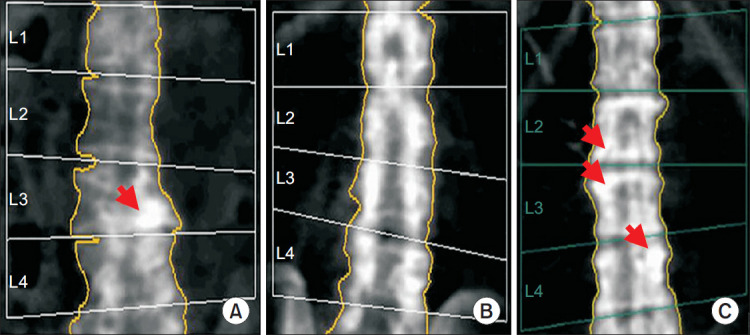
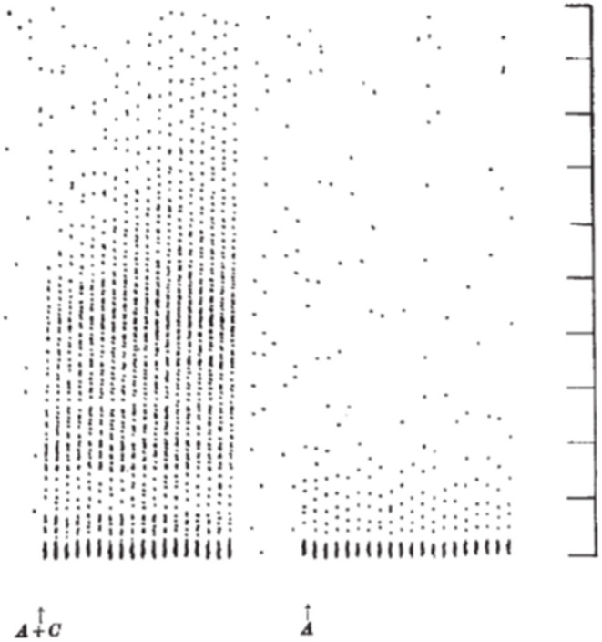
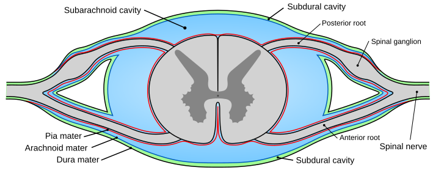

Printed ranges: duration 5 to 15 ms, amplitude 100 µV to 2 mV (Daube and Rubin). The captured window is phase locked to the unit's own firing.
Each voice is a simulated example, not a diagnostic cutoff. Normal values shift with the muscle sampled, age, the electrode, and how many units are counted.
Room three · The crowd
The crowd
One voice offers clues; the pattern across units and muscles is the diagnosis. The crowd is diagnosis by arithmetic. As you contract harder, the nervous system recruits: it fires the first motor unit faster, and at orderly intervals brings in the next. In the classic rule of fives, the second unit joins when the first is firing at about 10 hertz, the third as the rates reach 15, the fourth at 20. Divide the fastest firing rate on screen by the number of units producing it and you get the recruitment ratio. In a healthy muscle, at the moment a new unit joins, that ratio is about 5. It is the cleanest number in this essay, and the bench beside this text lets you break it both ways.
In myopathy, each unit is weak, so the crowd assembles early: a full interference pattern at a force where a healthy muscle would still be idling, every voice small. The bench's myopathy mode reaches its full pattern at about 40 percent of the slider. In chronic axon loss, the opposite: few voices survive, so each must fire far beyond its station, at rates of 25 to 40 hertz, and the ratio doubles or worse while the screen stays strangely empty between giants.
Read the interpreter line under the bench the way an electromyographer reads a study: not pattern names first, but two questions. Did the count change, or did the size? The room, the voice, and the crowd answer together.
Units on screen2
Fastest rate10 Hz
Recruitment ratio5.0
Orderly. Each new voice joins on schedule, and no voice is shouting.
Bench sound follows the simulated-sound switch, up top
Canonical steps, not continuous physiology: at each join the bench sets the fastest rate to five times the unit count, so the ratio reads exactly 5 by construction. Force is illustrative effort.
The verdict
What the microphone can say
Close with the honest ledger. The needle can say whose problem this is: a voice that is long and tall with a thin crowd belongs to nerve; a voice that is short and small with an early crowd belongs to muscle. It can say roughly when, in the bands the clock printed. It can map where, muscle by muscle, which is why sampling is a strategy and not a ritual. It cannot feel pain, measure effort, or date an injury to a day. And on day one after a nerve injury, the needle is not empty handed: recruitment is already reduced and the conduction study is already changing, even though the resting muscle is still silent. A quiet resting needle in the first days does not exclude an acute axonal injury; the right study time depends on the question being asked. Timing, like everything else in this room, is part of the measurement.
Fine print
What the model is, and where the evidence stops
The traces are synthesised exemplars, drawn from the durations, amplitudes, and rates in the Sources and labelled as display models wherever a number is drawn rather than quoted. Durations and phases were measured off the drawn templates with the same baseline rules the laboratory uses, which is why an exemplar's printed width is its measured width, not a round number. The recruitment bench compresses continuous physiology into canonical steps: three modes (normal, axon loss, myopathy), each a ladder of rule-of-fives states, so the ratio stays readable; real recruitment is a continuum, and the rule of fives describes the moment a new unit joins, not every moment of a contraction.
The clock's day counts are the textbook tradition's bands, drawn from the narrative sources in the Sources drawer. Experts dispute day-exact dating of lesions from needle findings, and this essay does not do it: the clock prints bands, and its verdicts speak in epochs. The page's sounds are simulated: each is synthesized in your browser from the rates and sizes printed beside its trace, and none is a recording of a patient or of an examination. The one sound picture in the text, the dive bomber, is flagged where it appears as an old audio description; the essay's claims stand on the shapes alone, and the sounds only illustrate them. Nothing here is a measurement of you.
Notes
The recruitment bench uses canonical rule of fives states: at each step the screen shows one more unit and the fastest rate rises by 5 hertz, so the displayed ratio is exactly 5 at every normal and myopathy state. A continuously ramped rate would show ratios above 5 between joins, which the rule does not claim. A small trace only jitter keeps the displayed rates from phase locking; the readouts stay canonical.
The motor unit templates carry a small terminal tail, about a tenth of the peak, below the threshold at which durations are measured, so that a full interference pattern reads as full on a display pool of twelve units. Durations and phase counts are measured off the drawn templates and are unaffected by the tail.
The clock's switch on days for individual findings are calibrated midpoints of the published bands in the Sources: fibrillations at day 12 in the paraspinal row, inside the published band of days 10 to 14, and day 38 in the foot row, inside the published five to six week band (days 35 to 42). The bands, not the midpoints, are the sourced quantities.
The bench's two qualitative judgements were made measurable for the build: baseline gone means the longest near flat stretch inside a 100 millisecond window falls under a millisecond (0.25 ms in the normal full pattern, 0.50 ms in myopathy at 40 percent force), and units individually followable only in axon loss is carried by the largest unit's share of the signal (0.38 of the variance, against 0.15 in the normal pattern) together with the unit counts of 3 against 12.
The fasciculation display rate is a calibrated pick inside the irregular, slow character the sources describe; no rate figure for fasciculations is printed in the prose, deliberately.
Sources
Daube JR, Rubin DI. Needle electromyography. Muscle Nerve, 2009 (the review this essay's norms come from: motor unit duration 5 to 15 ms, amplitude 100 µV to 2 mV, phases and polyphasia, the insertional activity budget, recruitment and the rule of fives).
Preston DC, Shapiro BE. Electromyography and Neuromuscular Disorders, 4th edition, 2020 (the tighter duration range of 5 to 10 ms and the 200 µV amplitude floor, printed as the disagreement; the end-plate potentials at about 10 to 50 µV; the biphasic end-plate spike and its initial negativity).
Katirji B. Electromyography in Clinical Practice (the fibrillation band of 1 to 5 ms, 20 to 300 µV, 0.5 to 15 Hz, with most fibrillations in practice firing between about 1 and 5 Hz; the positive sharp wave at 10 to 100 ms and up to about 1 mV; the sharp wave read as a fibrillation family waveform).
Kimura J. Electrodiagnosis in Diseases of Nerve and Muscle (the classic myotonic band of 20 to 150 Hz; the classic complex repetitive discharge band of 5 to 100 Hz).
StatPearls. Complex Repetitive Discharge (the same phenomenon banded at 3 to 40 Hz, carried as the disagreement with the classic account).
Wu PB et al. When to conduct electrodiagnostic studies after denervation injury (the timing review: evoked responses change before needle findings; proximal and paraspinal muscles declare earlier; the sensory response stays usable until about day 10 to 11).
Chaudhry V, Cornblath DR. Wallerian degeneration in human nerves: serial electrophysiological studies. Muscle Nerve, 1992 (the serial human data under the clock's nerve row).
Clinical Handbook of Neuromuscular Medicine, 2nd edition, 2024 (fibrillation potentials and positive sharp waves occur in both neurogenic and myopathic disorders that produce denervation or muscle membrane instability).
StatPearls electrodiagnostic entries (tighter bands for the same signals: fibrillation amplitude 20 to 200 µV; positive sharp wave duration 10 to 30 ms; myotonic discharges 40 to 100 Hz; printed here as the disagreement with the textbook spans used in the text; the drawn myotonic sweep follows the classic range).
The proximal to distal timing tradition carried in the timing literature (fibrillations by about three weeks in proximal muscles and five to six weeks in the feet, positive sharp waves a few days earlier), printed as tradition; the retrievable review is Wu et al., above.
The PM&R Files · Essay 26
The Bone Seesaw
Two crews keep bone strong: one builds new bone, one removes old bone. Below a cord injury, that balance breaks. Removal speeds up. Building does not keep up. The bone at the knee can lose about half its spongy bone density in some studied groups. Then a normal transfer, not a fall, can break it.
By a PM&R resident physician
This essay shows how the balance breaks after injury, and what treatments can and cannot do. It is for learning, not medical advice. The studies are small. Many include only men. Each number names its group and its test.
Proximal tibia bone density · below controls70%In 31 men with spinal cord injury studied more than a year after injury, bone mineral density at the proximal tibia, the bone just below the knee, sat 70 percent below 31 age matched controls. The distal femur sat 52 percent below controls in the same study.
Fragility fractures · overall incidence2.2%Per year, across 1,010 years of observation in 98 paraplegic men. The yearly incidence rose from 1 percent in the first 12 months after injury to 4.6 percent per year in men injured more than 20 years earlier. Fractures arrive late, and they keep arriving.
A seesaw is a picture, but it is not exact. The two sides do not trade bone back and forth. Mostly, bone leaves and does not come back. The last chapter explains where the picture breaks.
Scroll · The ledger, the machine, the map, the fractures, the scan, the levers, the limits
Chapter one · The ledger in health
Two crews keep the books on every bone
Bone renews itself. Patches are removed and rebuilt. This keeps bones strong and repairs cracks. If removal and building match, bone holds steady.
Two cell types do the work. Osteoblasts are the builders. They lay down soft new bone that hardens. Osteoclasts are the removers. They dissolve old bone. In health they take turns. The refill matches what was removed.
A signal controls the removers. It is called RANKL. More RANKL means more removal. OPG blocks RANKL. Their balance sets how fast bone is removed. Most bone drugs slow this signal or the removers.
Weight and load matter. Bone that carries weight stays. Bone that stops carrying weight is removed. After cord injury the legs carry almost no weight. But disuse is not the whole story. The injury itself pushes loss further.
The building crew, under the microscope. Panel A is a light microscopy section through trabecular bone: osteoblasts (ob) line the bone surface while osteocytes (oc), former osteoblasts entombed in the matrix, sit inside it. Panels B to D are electron microscopy of the same transition. Mouse bone, demineralized, toluidine blue stain in panel A. Image: Michael J. F. Blumer, from Annals of Anatomy 2021, via Wikimedia Commons. License: CC BY 4.0. The image shows cell types, not human spinal cord injury bone.
Formation · the osteoblast entry
Recruitment. Osteoblast precursors arrive at a site where resorption has finished and settle on the excavated surface.
Osteoid. The cells secrete unmineralized matrix, mostly type I collagen, building the new packet layer by layer.
Mineralization. Calcium phosphate crystals form in the osteoid over the following weeks, restoring stiffness.
Retirement. Some osteoblasts are entombed in their own matrix and become osteocytes, the sensor network that reports load.
Resorption · the osteoclast entry
Activation. RANKL binds RANK on osteoclast precursors. OPG, the decoy, can intercept RANKL before it arrives.
Attachment. The mature osteoclast seals a ring onto the bone surface and isolates a small pocket.
Dissolution. Acid and enzymes dissolve mineral and matrix inside the pocket. Calcium enters the blood.
Departure. The osteoclast detaches and the site passes to the formation crew, if the coupling holds.
The word to hold onto is coupling. In health the second crew is summoned by the first, in matching quantity. The disease in this essay is, at its core, an uncoupling: one crew gets louder and the other does not answer in kind.
Formation · health
Osteoblast refill matches the excavation at each remodeling site.
Running balance0
Net entry, healthy adult bone
Resorption · health
Osteoclast removal is real but rationed by the RANKL to OPG ratio.
Chapter two · The Seesaw Machine
Tip the beam yourself
Try it. This panel is a teaching model, not patient data. At the knee, spongy bone, called trabecular bone, lost 15 to 35 percent in year one. By about four years the thigh bone end was near 44 percent of normal. Move the slider. Try the levers.
The Seesaw Machine · Sublesional Bone Instrument (below the injury)Schematic · Teaching model · Not patient data
Proximal tibia · trabecular density remaining
Density lost since injury
The beam is level. Move the time slider and watch which pan wins.
What this means: No loss yet. Move time forward to see removal win.
0 months
Skeletal site
Levers
Stories · Jump to a moment
Pick a story above. It sets the beam and tells you, in plain words, what the fracture study found at that point.
Discovery · The scan trap
Lumbar spine · Machine model at 24 months102%
Looks fine. Even a little above the start.
Proximal tibia · Machine model at 24 months51%
About half its density gone. Two schematic readings, one example.
Why it happens: the spine keeps the load of sitting, and spine scans are often hard to read after injury. In Choi 2021, 44 of 83 spines could not be used for assessment. Hip density was correlated with time since injury (r = -0.40, 83 people). Spine density was not correlated. In Zehnder 2004, spine density rose with time since injury. The bars above are schematic, taken from the Seesaw Machine at 24 months with no levers on. Lesson: a good spine result does not clear the knee.
The slider and the site buttons change the beam, the readouts, and the narration at once. The two levers do not change the curve or its readouts: they switch the narration area to the evidence, so trial results are never drawn as an effect on this curve. Anchors for the untreated curve (Dudley-Javoroski and Shields 2012): knee trabecular sites lose 15 to 35 percent in year one, settle near 50 percent of the non injured value at about 4 years, and the distal femur sits at 44 percent beyond 4 years. Nothing on this panel can add weight to the teal pan, because no therapy in the evidence section rebuilds what was lost at the knee. That asymmetry is the essay in one panel.
Formation · after injury
Marker studies find formation close to normal early after injury, then suppressed in the acute phase summaries. It does not surge.
Running balanceNegative
From the first months onward
Resorption · after injury
Resorption markers rise high early. In one cohort they were still elevated in 30 percent of men injured more than 10 years earlier.
Chapter three · Where the bone goes
The loss has an address: below the lesion, at the knee
Below the injury only
Loss happens below the injury. Bone above the injury mostly stays normal. In one study of 31 men, bone below the injury was 41 percent below controls. Arms that work kept their bone. Legs that stopped working lost it.
Loss is worst at the knee. The bone ends there are rich in spongy bone. In 29 people with complete injury (13 scanned repeatedly), the knee area lost 15 to 35 percent of spongy bone density in year one.
Ledger graphic · Density by site, against controlsDauty 2000 · Dual photon absorptiometry
Density by site, against controls. Bone mineral density in 31 men with spinal cord injury studied more than a year after injury, versus 31 age matched controls, by dual photon absorptiometry (Dauty 2000, Bone). Cross sectional. The authors noted the distal femur and proximal tibia are the most common fracture sites.
Fast at first
Loss is fast at first. In 31 people with new injury, leg bone mineral content fell 0.59 percent per week, about 2.5 percent per month, across 60 weeks (Wilmet series, as reported by Troy and Morse 2015). In just 6 men, bone mineral content was down 30 percent at the thigh end and 37 percent at the shin top after 12 months.
Ledger note. Loss was slower in the few people who recovered walking (series as reported by Troy and Morse 2015). A removal marker was still high in 30 percent of men injured more than 10 years earlier (Zehnder 2004, 100 men).
Two kinds of bone, two speeds
Spongy bone loses first. Solid bone loses more slowly. Early on, removal markers were high and building markers were near normal. In 100 men, spongy loss leveled off between 1 and 3 years. Solid bone kept thinning beyond 10 years.
Most spongy loss stops at a low level. It levels near half of normal at about four years. Solid bone may keep falling for decades. One twin study found density falling across life. Both can be true. They track different kinds of bone.
Why the knee? It had the most spongy bone. It carried the most weight before injury, so it lost the most load. And it sits below most injuries. It is the first place loaded in a transfer or a fall.
Ledger graphic · The first four years at the kneeSchematic · Fitted to published anchors · Not patient data
The shape of the loss. Band drawn to the published anchors, not to patient data. Dudley-Javoroski and Shields 2012, pQCT, 29 people with complete spinal cord injury and 21 controls: 15 to 35 percent of trabecular density lost in year one at the distal femur, proximal tibia, and distal fibula; steady state near 50 percent of the non injured value at about 4 years; distal femur at 44 percent of the non injured value beyond 4 years; tibia diaphysis cortical area at 65.6 percent of the non injured value.
Formation · the map
No compensating rise anywhere below the lesion. Supralesional bone simply keeps its old balance.
Running balanceAbout half
Trabecular density remaining at the knee at steady state
Resorption · the map
Fastest at trabecular bone ends in years 1 to 3, slower and longer in cortical shafts.
Chapter four · The fracture ledger
Fractures that arrive on ordinary days
Fracture incidence rose with time since injury. In 98 men, 15 had 39 fractures over 1,010 years of observation (Zehnder 2004, a cross sectional study, with fracture histories verified from files and X rays). Overall the rate was 2.2 percent per year. All were in the legs. Breaks were rare in year one (1 percent), then rose to 4.6 percent per year after 20 years. The average first break came at 8.9 years.
Ledger note. Other studies report different rates. Reviews report 2.2 to 2.8 percent per year, one recent report at 7.4 percent per year, breaks in over 40 percent of people in some groups, and risk 5 to 23 times higher than in people without injury (Troy and Morse 2015). These are ranges across studies, not one group.
Ledger graphic · Fracture incidence by time since injuryZehnder 2004 · Per year
15 of 98Men sustained a fracture
39Fragility fractures, all lower limb
1,010Years of observation
8.9 yearsMean time to first fracture
Fractures arrive late, then keep arriving. Zehnder 2004, Osteoporosis International: 98 paraplegic men with fracture data, of 100 enrolled, followed across 1,010 years of observation. Incidence is per year within each period.
Normal days, real harm
Breaks happen during normal life. Reviews list transfers, falls, bumping into things, and rolling over in bed. They cluster at the knee. Often there is little pain at first, so breaks are missed. In one report, over 80 percent needed surgery and 13.5 percent had complications. Other studies found complications in 53 to 54 percent.
A break can show as swelling, warmth, a change in shape, or a change in spasticity, even when pain is slight. Get a suspected break assessed promptly, and handle the leg carefully before any new standing or loading.
Is there a danger line? In one study of 99 motor complete participants, 21 with fracture histories, all participants with a fracture history had measurements below these thresholds, which come from this one sample: 114 milligrams per cubic centimeter at the distal femoral epiphysis (the thigh bone end) and 72 at the distal tibial epiphysis (the bone end near the ankle). Those equal 46 percent and 29 percent of the reference mean. Treat them as a guide, not a promise.
Formation · the risk years
Nothing in the formation entry offsets a decade at low density. Time at the bottom is itself the exposure.
Running balance8.9 years
Mean time to first fracture in the 98 man cohort
Resorption · the risk years
Incidence climbs from 1 percent in year one to 4.6 percent per year beyond 20 years in the same cohort.
Chapter five · Reading the scan
The standard scan can miss the knee
The usual scan looks in the wrong place. DXA is a low dose X ray scan of bone density. It usually scans the spine and hip. After cord injury the spine is mostly spared. It still carries the weight of sitting. A good spine result can hide a knee that has lost most of its bone. Hip density was correlated with time since injury. Spine density was not.
Ledger graphic · Spines the scan cannot useChoi 2021 · DXA, n 83
Why the spine scan fails so often. Choi 2021, Annals of Rehabilitation Medicine: in 83 individuals with spinal cord injury, spines were judged improper for assessment after vertebrae with local structural changes were excluded, as densitometry rules require. Retrospective cohort, DXA read by two readers.
The hip helps. The knee matters more.
The hip helps. It is not enough. Breaks happen at the knee, and hip and knee results can differ in the same person. Knee scans are hand drawn, with variation of about 2 to 3 percent in the protocol that reported it. They are hard to do well. Positioning, extra bone growth, old breaks, metal, and stiff joints can spoil the image.
Ledger note. The full problem list for knee scans includes heterotopic ossification (extra bone in soft tissue), fracture nonunion, surgical hardware, patella overlap, and contractures that block positioning. The 2019 densitometry positions name the total hip, proximal tibia, and distal femur for this group, as cited in Choi 2021.
Two tools do not fit this group. The FRAX risk calculator has not been tested after cord injury. The usual density labels have no fracture data for this group. Scan the hip and knee. Do not trust a good spine alone. Treat long time since injury as a risk on its own.

Why the spine scan fails so often after cord injury. Lumbar spine DXA images from a cohort of 83 people with spinal cord injury: local structural changes (arrows, panels A and C) and a laminectomy (panel B) forced vertebrae out of the analysis, and 44 of the 83 spines could not be assessed at all. Figure 1 from Choi and colleagues, Annals of Rehabilitation Medicine 2021. License: CC BY NC 4.0. Reproduced for teaching with attribution.
Formation · the scan
A normal spine reading is not a formation victory. It is the spared site reporting on itself.
Running balance44 of 83
Spines judged improper for assessment in one cohort
Resorption · the scan
The resorption that matters sits at the knee, where the standard scan never looks.
Chapter six · What can move the beam
Brakes work early. Nothing here rebuilds.
No trial in this essay has rebuilt knee bone, and none was big enough to prove fewer fractures. The best results slow loss. They work best early, and best at the hip. A review of 56 studies, with 16 trials and 368 people (its search ended in December 2015), said the evidence was too weak to recommend a treatment.
Bisphosphonates · started early after injury
Evidence · Moderate for zoledronic acid
The brake holds at the hip
Started within days of injury, these drugs held hip density far better than placebo for up to a year, but they did not rebuild bone and helped least at the knee.
In a double blind trial of 31 patients started on weekly oral alendronate within 10 days of injury, the treated group finished 12 months with total hip density 17.6 percentage points better than placebo among the trial's participants, and 5.3 percentage points better in total body density. In a pilot trial of a single zoledronic acid infusion, 17 patients enrolled and 12 were evaluated at the 6 month primary endpoint: total hip density had fallen 2.2 percent on the right with treatment against 8.6 percent with placebo among those evaluated, with a similar pattern at the femoral neck. The same pilot reports the honest wrinkle: losses at the knee were larger, and the between group differences there were smaller. The drug works where fractures are less common, and works least where they are most common.
Bisphosphonates · started in chronic injury
Evidence · Low and inconsistent
Loss can be paused, not repaid
Started long after injury, daily alendronate slowed further loss at the shin and hip over two years, but it did not restore bone already lost.
In a randomized open label study, 65 paraplegic men enrolled and 55 completed 24 months of daily alendronate plus calcium against calcium alone, at times from injury spanning 0.1 to 29.5 years. Distal tibial epiphysis density fell 2.0 percent with treatment against 10.8 percent on calcium alone among the 55 completers, and total hip density held near baseline with treatment while falling 4.1 percent on calcium alone. Lumbar spine density rose in both groups, which the scan chapter teaches us to read with suspicion. Holding a lower line is a real outcome. It is not restoration, and the systematic review grades the chronic evidence low and inconsistent.
Denosumab · started soon after injury
Evidence · One small randomized trial
Knee density held for 18 months
Denosumab held knee density for 18 months in one small trial, but holding density is not rebuilding bone, and density alone does not prove fewer fractures.
In the Cirnigliaro 2020 randomized trial, 26 people with subacute motor complete spinal cord injury were randomized, and 18 had 18 month outcomes analyzed (10 denosumab, 8 placebo). Knee areal density, at the distal femur and the proximal tibia, was maintained on denosumab while the placebo group lost heavily. Preservation is not rebuilding, and density is not fracture proof.
Calcium and vitamin D
Evidence · Thin for bone outcomes
Fix the deficiency, expect no rescue
Fixing low vitamin D is standard care, but no trial shows calcium or vitamin D alone stops this bone loss or prevents fractures.
Deficiency is the norm in this population: a meta analysis of 13 studies with 1,962 patients found vitamin D insufficiency, below 30 nanograms per milliliter, in 81.6 percent of patients studied, and deficiency, below 20 nanograms per milliliter, in 52.5 percent of patients studied. Those figures describe an association in pooled cohorts, not proof that low vitamin D causes the bone loss in any individual. Correcting deficiency is standard supportive care and a precondition for antiresorptive drugs to work safely. What the literature does not contain is a trial showing calcium or vitamin D alone preventing sublesional bone loss or fractures after cord injury. Print that absence plainly: these are corrections, not treatments for the seesaw.
Standing, loading, and electrical stimulation
Evidence · Very low to low, mostly negative
Plausible, prescribed, unproven
Standing and stimulation programs are plausible and widely used, but trials so far show little or no bone benefit.
The oldest observation in this essay argues against easy optimism: in the 31 man French cohort, standing, walking, and sitting showed no influence on sublesional bone mineral content. The systematic review graded standing with or without treadmill walking in acute injury as very low quality evidence of effectiveness, found low quality evidence that electrical stimulation, tilt table standing, and ultrasound provide no significant effects, and found very low quality evidence of no benefit for low intensity functional electrical stimulation cycling three days per week in chronic injury. Loading programs have other reasons to exist, from circulation to bowel care to participation. As bone therapy after cord injury, on current evidence, they are a hope with a plausible mechanism and a thin trial record, and this essay labels them that way.
Guideline note. The Paralyzed Veterans of America published a bone health guideline in 2022. This essay reports the studies themselves, so the guideline is noted here and not used as a source for any number.
A note on what is missing. Newer anabolic and dual action agents are being studied in chronic spinal cord injury. In a 2024 cohort, 12 women with chronic injury took monthly romosozumab for a year: total hip areal density improved (median change 4.2 percent), while bone mineral at the knee did not significantly improve (Crack 2024). That literature is early and small, so it earns this note and no card.
Formation · the levers
No lever on this page adds proven formation at the knee. The teal pan stays light.
Running balanceBraked
Best case: the fall slows, early, at the hip
Resorption · the levers
Bisphosphonates brake resorption. Started early, the brake demonstrably holds density at the hip for 6 to 12 months in small trials.
Chapter seven · Limits
Where the seesaw metaphor breaks
The seesaw picture breaks in three ways. First, the sides do not trade. Removal rises. Building does not. Second, sites differ. One person can have a normal spine and a shin at a third of normal. Third, loss does not undo. Once the inner lattice breaks, slowing removal does not rebuild it.
The evidence is thin. Several key cohorts were small and mostly men. Key trials had 17 to 65 people. The steep numbers come mostly from complete injuries with little or no leg loading. Many studies include men only, so results may not fit women or neck level injury. Tests differ, so percentages do not swap. The machine is a smooth drawing, not real data. The levers beside it show evidence, not effects.
The main story holds. Below the injury, balance breaks within weeks. The knee loses about half its spongy bone in a few years. Breaks come years later from normal loads. The usual scan misses it. The best tested drugs help early, and help most at the hip.
Sources
Boyce BF, Xing L. Biology of RANK, RANKL, and osteoprotegerin. Arthritis Research and Therapy. 2007;9 Suppl 1:S1. PMCID PMC1924516. RANKL and RANK signaling, the OPG decoy, and the RANKL to OPG ratio as a determinant of bone mass.
Jiang SD, Dai LY, Jiang LS. Osteoporosis after spinal cord injury. Osteoporosis International. 2006;17:180 to 192. PMID 16217589. Sublesional pattern, supralesional sparing, trabecular bone more affected than cortical, and a new steady state reestablished about 2 years after injury.
Dauty M, Perrouin Verbe B, Maugars Y, Dubois C, Mathe JF. Supralesional and sublesional bone mineral density in spinal cord-injured patients. Bone. 2000;27:305 to 309. PMID 10913927. Thirty one men with spinal cord injury against 31 controls: sublesional density 41 percent below controls, distal femur 52 percent below, proximal tibia 70 percent below; standing, walking, and sitting without influence on sublesional bone mineral content.
Dudley-Javoroski S, Shields RK. Regional cortical and trabecular bone loss after spinal cord injury. Journal of Rehabilitation Research and Development. 2012;49:1365 to 1376. PMCID PMC3647247. pQCT in 29 people with complete spinal cord injury and 21 controls: 15 to 35 percent trabecular density lost in year one at the distal femur, proximal tibia, and distal fibula; steady state near 50 percent of the non injured value at about 4 years; distal femur at 44 percent beyond 4 years.
Zehnder Y, Luthi M, Michel D, et al. Long-term changes in bone metabolism, bone mineral density, quantitative ultrasound parameters, and fracture incidence after spinal cord injury: a cross-sectional observational study in 100 paraplegic men. Osteoporosis International. 2004;15:180 to 189. PMID 14722626. Fracture incidence, marker disproportion, logarithmic leveling at 1 to 3 years, and persistent cortical loss.
Troy KL, Morse LR. Measurement of bone: diagnosis of SCI-induced osteoporosis and fracture risk prediction. Topics in Spinal Cord Injury Rehabilitation. 2015. PMCID PMC4750811. Fracture incidence ranges, low trauma mechanisms, two phase course, DXA limitations at the knee, and the unvalidated status of FRAX after spinal cord injury.
Eser P, Frotzler A, Zehnder Y, Denoth J. Fracture threshold in the femur and tibia of people with spinal cord injury as determined by peripheral quantitative computed tomography. Archives of Physical Medicine and Rehabilitation. 2005;86:498 to 504. Threshold values of 114 and 72 milligrams per cubic centimeter at the distal femoral and distal tibial epiphyses, confirmed in the primary abstract during the November 5, 2026 critique fix.
Choi H, Chang SY, Yoo J, Lim SH, Hong BY, Kim JS. Correlation between duration from injury and bone mineral density in individuals with spinal cord injury. Annals of Rehabilitation Medicine. 2021. PMCID PMC7960953. Eighty three individuals: 44 spines improper for assessment; hip density, not spine density, correlated with time since injury; Figure 1 reproduced under CC BY NC 4.0.
Gilchrist NL, Frampton CM, Acland RH, et al. Alendronate prevents bone loss in patients with acute spinal cord injury: a randomized, double-blind, placebo-controlled study. Journal of Clinical Endocrinology and Metabolism. 2007;92:1385 to 1390. PMID 17227802. Thirty one patients, alendronate 70 milligrams weekly started within 10 days, 17.6 percentage point between group difference at the total hip at 12 months.
Schnitzer TJ, Kim K, Marks J, Yeasted R, Simonian N, Chen D. Zoledronic acid treatment after acute spinal cord injury: results of a randomized, placebo-controlled pilot trial. PM and R. 2016;8:833 to 843. Seventeen enrolled, 12 evaluated at 6 months; hip protection with smaller differences at the knee.
Zehnder Y, Risi S, Michel D, et al. Prevention of bone loss in paraplegics over 2 years with alendronate. Journal of Bone and Mineral Research. 2004;19:1067 to 1074. PMID 15176988. Sixty five men enrolled, 55 completers, alendronate plus calcium against calcium alone over 24 months.
Soleyman-Jahi S, Yousefian A, Maheronnaghsh R, et al. Evidence-based prevention and treatment of osteoporosis after spinal cord injury: a systematic review. European Spine Journal. 2018;27:1798 to 1814. PMID 28497215. Fifty six studies, 16 randomized trials, 368 patients; its search ended December 31, 2015; evidence grades for bisphosphonates, standing, and electrical stimulation, and the conclusion that no recommendation could be made.
Wang L, Gan J, Wu J, Zhou Y, Lei D. Impact of vitamin D on the prognosis after spinal cord injury: a systematic review. Frontiers in Nutrition. 2023;10:920998. PMID 36866055. Meta analysis of 13 studies and 1,962 patients: insufficiency in 81.6 percent of patients, deficiency in 52.5 percent of patients.
Cirnigliaro CM, La Fountaine MF, Parrott JS, et al. Administration of denosumab preserves bone mineral density at the knee in persons with subacute spinal cord injury: findings from a randomized clinical trial. JBMR Plus. 2020. PMCID PMC7587457. Twenty six people with subacute motor complete spinal cord injury randomized; 18 with 18 month outcomes analyzed (10 denosumab, 8 placebo); knee areal density maintained on denosumab while placebo lost heavily.
Crack LE, Simonian N, Schnitzer TJ, Edwards WB. Monthly treatment with romosozumab for 1 year increases bone mineral at the hip, but not the knee, in women with chronic spinal cord injury. Journal of Bone and Mineral Research. 2024. PMCID PMC11193877. Twelve women with chronic spinal cord injury; total hip areal density improved over 12 months of monthly romosozumab, with no significant improvement in bone mineral at the distal femur or proximal tibia.
Blumer MJF. Bone tissue and histological and molecular events during development of the long bones. Annals of Anatomy. 2021;235:151704. Microscopy image via Wikimedia Commons, CC BY 4.0.
Method note: the Seesaw Machine is a teaching schematic. Its untreated curves are smooth exponential decays fitted to the anchor values reported by Dudley-Javoroski and Shields 2012 (15 to 35 percent trabecular loss in the first year at knee sites; distal femur near 44 percent of the non injured value beyond 4 years), with femoral neck and lumbar spine behavior following the ranges summarized by Troy and Morse 2015 and Zehnder 2004. The panel prints those anchors in its own note. The weight bearing and bisphosphonate toggles do not change the curve or its readouts at all: each switches the narration area to the evidence itself (the observational loading reports for weight bearing; the Gilchrist 2007 acute and chronic alendronate trial comparisons for bisphosphonate), labeled as evidence in studied groups, not as an effect on this curve. Earlier versions of this panel scaled the loss by invented factors; that behavior was removed in the November 5, 2026 critique fix. The curves are not fitted to individual patient data, they are not predictions, and the panel says so. Trial numbers in the text are reported as published, with the population and the number evaluated stated beside them.
The PM&R Files · Essay 27
Wind-Up
Give the same painful tap again and again, fast enough, and the spinal cord answers bigger each time. The tap never changes. The answer grows. That is wind-up. Pain is not a wire. The cord turns volume up or down from the last few seconds.
By a PM&R resident physician
One warning first. Wind-up is narrow and lasts seconds. It is one window on a bigger state called central sensitization, where pain sensitivity stays high longer. The two are not the same, and wind-up is not a diagnosis. In people, doctors test it as temporal summation: whole ten tap series are averaged against single taps. That rating is a perceptual correlate of the cord process, not a recording of it.
Slowest train that still winds up · the founding experiment · Hz means times per second0.33 HzOne tap about every 3 seconds. Any slower, and each response faded before the next came. Each tap left an effect lasting about 3 seconds.
Less heat needed for the same summation · fibromyalgia2.3 to 3.4 °C26 patients, 23 controls. Patients hit top rating with heat 2.3 degrees cooler at the hands, 3.4 degrees cooler at the feet.
Scroll · The discovery, the chain, the machine, the human test, the clinic, the drugs, the limits
Section one · The discovery
The burst that kept growing
In 1965, Mendell and Wall recorded nerve cells in a cat spinal cord, using electrical pulses to a nerve. They tested C fibers, thin fibers carrying slow, dull, burning pain. Touch signals stayed the same, tap after tap. But when C fibers fired, a late burst appeared and grew. Each identical tap brought more signals, for longer.
They called it wind-up. Only the C fiber part grew; the touch part stayed flat. Cells kept firing for several seconds after the taps stopped. The slowest rate that worked was about 0.33 Hz, one tap every 3 seconds. Any slower, nothing added up.

The founding trace · 1965, redrawn in 2022Left: each vertical line of dots is one stimulus, and each dot is one action potential. When the stimulus recruits C fibers as well as A fibers, the late discharge, the lower smear of dots, grows longer from stimulus to stimulus. Right: A fiber stimulation alone. The burst is brief and identical every time. Stimuli were delivered every 1.3 seconds, 18 in total on the left, 20 on the right. The cells were wide dynamic range neurons: they answer everything from a light brush to a hard pinch, and harder as the input grows. Figure from Mendell LM, The Path to Discovery of Windup and Central Sensitization, Frontiers in Pain Research, 2022, reproducing Figure 2 of Mendell and Wall, Nature, 1965. Licensed CC BY 4.0.
Source note: details come from Mendell's open 2022 retelling of the 1965 paper. Full citation in Sources.
Section two · The mechanism chain
How the stacking works
The chain, link by link
C fiber input. A slow pain fiber fires into the dorsal horn, the back of the cord where pain signals arrive. Touch fibers alone never cause wind-up.
A slow chemical mix. The fiber releases glutamate (fast) plus slow chemicals (substance P, CGRP) that hold the cell on for seconds.
Signals that stack. Each signal leaves a small lift in the cell, fading over seconds. Land the next one in time, and lifts add up. That is temporal summation.
A blocked switch opens. The NMDA receptor (a booster switch) starts plugged by magnesium. As lifts pile up, the plug pops out. Each signal now boosts more than the last.
A bigger answer. Open NMDA switches let calcium in. The cell fires more, for longer. Block NMDA: growth stops, first answer stays.

The room where it happens · the dorsal horn
Sensory fibers enter the cord at the back, through the dorsal root, and their first synapses sit in the dorsal horn, the upper wing of the butterfly shaped gray matter in this section. Wind-up is a property of neurons in that wing and the deeper dorsal horn below it. Plate 770 from Gray's Anatomy, 1918 edition, Henry Vandyke Carter. Public domain, via Wikimedia Commons. Shown unmodified on a light plate so the engraved labels stay legible.
Section three · The Wind-Up Machine
Try it: ten taps, one cell
Try it. Amber ticks are ten identical taps. The green line is one pretend cord cell's answer. At 0.3 Hz, each answer fades first, so there is almost no growth. At 1 or 2 Hz, answers stack, the NMDA switch opens, and the line climbs like stairs. Run it again with NMDA blockade on.
The Wind-Up Machine · Dorsal Horn OscilloscopeSchematic · Qualitative teaching model informed by published mechanisms · Not patient data
Channel 1 · summed response, one schematic neuronNMDA receptors · openBrake · off
Stimuli delivered
Summed response now · arbitrary units
Model response ratio · latest scored response over first
The scope is dark and the neuron is at rest. Choose a frequency, then deliver the train.
Plain words Pick a speed, run the train, and watch whether the green answers stack or barely grow.
Stimulus frequency
Train and receptor
The brake test · schematic
The brake, in plain words: a second strong pain somewhere else can turn the volume down here. Scientists call this conditioned pain modulation (CPM). Its older name is DNIC (diffuse noxious inhibitory control). Turn the brake on before or during a train and watch the green summed response shrink. Schematic only: the button shows the direction of the effect, not its size in any study. The brake's strength varies by person. The study behind the idea: Yarnitsky and colleagues, 2008. People with an efficient brake before chest surgery had lower odds of pain lasting months (odds ratio 0.52). An efficient brake predicted less chronic pain. This machine makes no such amounts.
Time on this scope is compressed 3 to 1, so a 30 second train at 0.3 Hz plays in about 10 seconds. Compression changes the viewing speed only; the intervals and decay times inside the model keep their true ratios. The model response ratio here is the latest scored response divided by the first. It is the machine's own model measure, distinct from the DFNS wind-up ratio in Section four.
What to notice: at 0.3 Hz, answers fade in about 3 seconds, so nothing stacks. Under blockade, the first answer stays; growth is nearly gone.
Section four · The human test
The test in people
Perceived pain reflects processing across the whole nervous system and context, so a bigger rating alone cannot name one cellular cause. You cannot listen to a cord cell in a clinic. But you can ask how ratings of whole series compare with single taps. That is the human test, temporal summation of pain. In 2006, the German DFNS network made it part of quantitative sensory testing (QST), in 180 healthy volunteers.
First, pinpricks
The DFNS wind-up ratio · Rolke and colleagues, 2006
Reference cohort: 180 healthy volunteers · tested at face, hand, and foot · 10 centers. Threshold means the stimulus level where pain begins.
Step 1 · Single1 pinprick256 mN at hand and foot · 128 mN at face · calibrated pinprick forcesRate it: 0 to 100
→
Step 2 · Series10 pinpricksIdentical · 1 per second · within 1 square centimeterRate the series: 0 to 100
→
Step 3 · Repeat5 timesThe whole procedure, five repetitionsFive single ratings · five series ratings
→
Step 4 · The ratiomean series ratingmean single ratingRatio 1: the train felt like the single tapRatio 3: three times as intense, stimulus unchanged
Failure mode · zero denominatormean series rating ÷ 0 = undefinedWhen a volunteer rated the single stimulus 0, no ratio exists. That happened in 12 of 1080 ratios, 1.1 percent, in the reference study itself. Small first ratings inflate ratios for arithmetic reasons that have nothing to do with spinal cords.
Then, heat
Heat works too, and slower. Short pulses at 0.33 Hz built the same staircase. Once built, far slower pulses slowed its fading: 0.17 Hz, even 0.08 Hz. At the feet, 0.08 Hz showed no group difference. Afterward, a fading ache was still felt at 15 and 30 seconds.
Same maximal summation, less heat · Staud and colleagues, 2007
Titration target: summation rating 50, give or take 5, on a 0 to 100 scale · 26 patients with fibromyalgia · 23 controls
Hands · patients49.9 °C · SD 2.7
Hands · controls52.2 °C · SD 1.1
Hands: same rating reached with 2.3 °C less heat
Feet · patients50.0 °C · SD 2.8
Feet · controls53.4 °C · SD 1.4
Feet: same rating reached with 3.4 °C less heat
Limits: small samples; the groups overlap. Bar scale runs 46 to 55 °C; whiskers show plus or minus 1 SD. Group difference across sites: t equal to 3.6, p equal to .001. Aftersensations at 15 and 30 seconds then decayed more slowly in patients: hands p equal to .002, feet p equal to .03. Traces above are schematic, drawn to the titration endpoints, not recorded data.
Try the heat test yourself
What average heat produced the same top rating?
Staud and colleagues, 2007 · 26 patients with fibromyalgia · 23 controls · Both groups aim at the same top summation rating: 50, give or take 5, on a 0 to 100 scale. These are group averages, and the groups spread around them. Steps are schematic. End temperatures are the study values.
Heat now:
FibromyalgiaAverage not there yet · reaches 50 at 49.9 °C
ControlsAverage not there yet · reaches 50 at 52.2 °C
Plain words Raise the heat step by step. Watch which group average reaches the top rating, and at what temperature.
In fibromyalgia, the same top rating comes at lower heat. A second study (14 patients, 19 controls) found: These tests supported altered central pain processing rather than a difference in the measured peripheral pain threshold (p less than .05). One more claim arrives second hand, flagged as such: the same team reports, from its earlier work, that patients summate below 0.2 Hz, where controls do not.
Section five · When the staircase runs high
When the build up runs high
Associations only. One group, one lab test at a time. Nothing here says summation caused the condition.
Fibromyalgia · the heat train studies
Same staircase, less input, slower decay
Patients reach the rating with less heat, and their ratings fade more slowly afterward. Tests supported altered central processing, not a peripheral threshold difference.
Full temperatures: Section four chart. Samples: 26 patients, 23 controls (2007); 14 patients, 19 controls (2008).
Read at this strength: small studies from one center and one team. One team repeating a result is not the same as many teams confirming it.
Knee osteoarthritis · signs, not just symptoms
About half the knees show a central sign
Joint pain is blamed on the joint. In many painful knees, lab tests find the cord has turned more sensitive. Summation is one sign.
Hochman 2013: 36 people, 57 knees, 18 controls. 45.6 percent of knees had at least one of three signs: pressure pain sensitivity, stronger summation, or pain from light touch. Scoring above 12 on a pain questionnaire matched higher odds of a sign: adjusted odds ratio 5.6 (1.3 to 22.9).
Denominator check: 45.6 percent counts knees with any one of the three signs. It is not the share with stronger summation alone.
Neuropathic pain · summation as a treatment signal
Higher pretreatment summation was associated with later response in one 30-person cohort
If summation marks NMDA driven boosting, people with the most summation might gain most from an NMDA blocker. One study checked summation before treatment.
Bosma 2018: 30 people with hard to treat nerve pain got a 5 day ketamine course. Response meant at least 30 percent relief at one month. About half responded (average relief 61 percent versus 7 percent). Summation (study measure, no unit given) was far higher in responders: median 200 (middle half 100 to 345) versus 44 (9 to 92), p equal to .001.
Association only: summation was measured before treatment and matched who improved. That does not prove lowering summation is what eased the pain. No randomized comparison group.
Before surgery · the accelerator and the brake
Summation predicted the acute pain. The brake predicted the chronic pain.
Two sides: an accelerator (summation) and a brake (conditioned pain modulation, CPM: pain in one place turns pain down elsewhere). Two separate cohorts before chest surgery tested them apart.
Weissman-Fogel 2009 (84 patients): stronger summation matched worse movement pain on days 2 and 5 (model r squared 0.225, for summation plus mechanical pain scores, p equal to .008). Yarnitsky 2008 (62 patients): the brake, not summation, predicted lasting pain in that cohort. Odds ratio 0.52 per 10 point drop.
The lesson: a high staircase flagged a harder first week. Lasting pain tracked the brake. Summation alone is only half the picture.
Two sides of the profile · what predicted what
The accelerator · temporal summation
Weissman-Fogel and colleagues, 2009 · 84 patients, tested before thoracotomy
PredictedMovement provoked pain on days 2 and 5 · model r squared 0.225, for the model containing both enhanced summation and mechanical pain scores, p equal to .008
Did not predictResting pain · no variable predicted it
The brake · DNIC efficiency
Yarnitsky and colleagues, 2008 · 62 patients · mean follow up 29.0 weeks (SD 16.9)
PredictedChronic post-thoracotomy pain in this 62 patient cohort
Odds ratio per 10 point reduction, 0 to 100 pain scale00.52 · 95% CI 0.33 to 0.771.0 · no association
The brake, not summation, predicted chronic pain.
Section six · The pharmacology, honestly
Block the switch, flatten the staircase. Mostly.
In fibromyalgia, ketamine (0.3 milligrams per kilogram) versus placebo: thresholds for one tap and for five taps at 2 Hz. The one tap threshold did not move. The gap between one and five moved in opposite directions (chart). Catch: the key part ran in a picked group, 15 of 17 people who had responded to ketamine.
The threshold span moves in opposite directions · Graven-Nielsen and colleagues, 2000
Ketamine · 0.3 mg/kg IVminus 42.3% · SD 15.0
Placeboplus 50.5% · SD 49.2
Change in the span between single and repeated stimulus thresholds, as a percent of the pre-drug value · difference p less than .03 · single stimulus threshold: no significant effect on either infusion
A cleaner test crossed species. 18 healthy men tried pregabalin (three 300 mg doses over two days), ketamine, and placebo. Ketamine raised the summation threshold and cut stronger responses (both p less than .001). Its top dose slowed wind-up in rat cord cells (30 rats, p equal to .014). Pregabalin did neither.
Grade gabapentinoid drugs (like pregabalin) with care. Helping nerve pain is a separate question. For the claim that they turn summation down, evidence is thin and mixed, and a direct test found no effect. So the machine switch says NMDA blockade, not a pill name.
Limits · Where the metaphor and the science need care
Wind-up is a window. It is not the house.
Keep the boundary clear. Wind-up is built by one set of fibers firing together, peaks in under a minute, and fades in seconds. Central sensitization is bigger in every way: no summation needed, it spreads, and it builds over minutes to hours, fading more slowly. Mendell: the two are not the same, and wind-up is not needed for it.
Three results follow. A normal test does not rule it out. A strong test does not prove it. The test samples one mechanism among several. It is a research tool for groups, not a validated test for one person's pain. And no person's pain is wind-up.
Amplification has a rhythm, a chemistry, and an off switch. In the founding experiment, taps had to come about every 3 seconds or faster, or nothing built up. Block the switch, it never climbs. A cord that adds up the recent past is doing math, not breaking. The hard part: knowing when the math becomes the problem.
Sources
Mendell LM, Wall PD. Responses of single dorsal cord cells to peripheral cutaneous unmyelinated fibres. Nature. 1965;206:97 to 99. The founding experiment.
Mendell LM. The Path to Discovery of Windup and Central Sensitization. Frontiers in Pain Research. 2022;3:833104. PMCID PMC8915729. Open access, CC BY. Source for the 0.33 Hz minimum rate, the roughly 3 second facilitation, the afterdischarge, the mechanism chain including substance P, neurokinin receptors, the magnesium block and NMDA recruitment, and the statement that wind-up and central sensitization are not equivalent. Figure 1 of this article, reproducing the 1965 raster, is the trace image used in Section one.
Rolke R, Baron R, Maier C, et al. Quantitative sensory testing in the German Research Network on Neuropathic Pain (DFNS): standardized protocol and reference values. Pain. 2006;123:231 to 243. PMID 16697110. Source for the wind-up ratio protocol: 256 mN pinprick on hand and foot, 128 mN on face, 10 stimuli at 1 per second within 1 square centimeter, five repetitions, ratio of mean series rating to mean single rating, 180 healthy volunteers, and 12 of 1080 ratios (1.1 percent) not calculable because the single stimulus rating was zero.
Staud R, Robinson ME, Price DD. Temporal summation of second pain and its maintenance are useful for characterizing widespread central sensitization of fibromyalgia patients. Journal of Pain. 2007;8:893 to 901. PMCID PMC2174917. Source for the titration temperatures (hands 49.9 against 52.2 degrees; feet 50.0 against 53.4 degrees; 26 patients, 23 controls), maintenance at 0.17 and 0.08 Hz, and aftersensations at 15 and 30 seconds decaying more slowly in patients (hands p equal to .002; feet p equal to .03).
Staud R, Bovee CE, Robinson ME, Price DD. Cutaneous C-fiber pain abnormalities of fibromyalgia patients are specifically related to temporal summation. Pain. 2008;139:315 to 323. PMCID PMC2577082. Source for similar C fiber thresholds between 14 patients and 19 controls with lower heat pulse temperatures still required in patients.
Hochman JR, Davis AM, Elkayam J, Gagliese L, Hawker GA. Neuropathic pain symptoms on the modified painDETECT correlate with signs of central sensitization in knee osteoarthritis. Osteoarthritis and Cartilage. 2013;21:1236 to 1242. PMID 23973136. Source for 45.6 percent of 57 eligible knees showing one or more central sensitization signs and the adjusted odds ratio of 5.6 (95 percent confidence interval 1.3 to 22.9) for higher questionnaire scores.
Bosma RL, Cheng JC, Rogachov A, et al. Brain dynamics and temporal summation of pain predicts neuropathic pain relief from ketamine infusion. Anesthesiology. 2018;129:1015 to 1024. Source for the 30 patient ketamine study: about 50 percent of patients responding, mean relief 61 percent in responders against 7 percent in nonresponders, and pretreatment temporal summation medians of 200 (interquartile range 100 to 345) in responders against 44 (9 to 92) in nonresponders, p equal to .001.
Weissman-Fogel I, Granovsky Y, Crispel Y, et al. Enhanced presurgical pain temporal summation response predicts post-thoracotomy pain intensity during the acute postoperative phase. Journal of Pain. 2009;10:628 to 636. Source for 84 patients, the association with provoked postoperative pain (model r squared 0.225, p equal to .008, for a model containing both enhanced temporal summation and mechanical pain scores), and the absence of prediction for resting pain.
Yarnitsky D, Crispel Y, Eisenberg E, et al. Prediction of chronic post-operative pain: pre-operative DNIC testing identifies patients at risk. Pain. 2008;138:22 to 28. PMID 18079062. Source for 62 patients, mean follow up 29.0 weeks, and the odds ratio of 0.52 (95 percent confidence interval 0.33 to 0.77) per 10 point pain scale reduction for efficient DNIC against chronic post-thoracotomy pain.
Graven-Nielsen T, Aspegren Kendall S, Henriksson KG, et al. Ketamine reduces muscle pain, temporal summation, and referred pain in fibromyalgia patients. Pain. 2000;85:483 to 491. PMID 10781923. Source for ketamine 0.3 milligrams per kilogram, no significant effect on single stimulus threshold, and the single to repeated threshold span changing by minus 42.3 percent on ketamine against plus 50.5 percent on placebo (p less than .03), in a study whose second part included 15 of 17 ketamine responders.
Arendt-Nielsen L, Mansikka H, Staahl C, et al. A translational study of the effects of ketamine and pregabalin on temporal summation of experimental pain. Regional Anesthesia and Pain Medicine. 2011;36:585 to 591. PMID 21941220. Source for the 18 volunteer crossover: ketamine effects at p less than .001, rat wind-up inhibition at p equal to .014, and pregabalin affecting neither temporal summation nor wind-up.
Gray H. Anatomy of the Human Body. 20th edition, 1918. Plate 770, diagrammatic transverse section of the medulla spinalis and its membranes, illustrated by Henry Vandyke Carter. Public domain, via Wikimedia Commons. The anatomy plate in Section two.
Method note: the Wind-Up Machine is a schematic model drawn from the published shape of the phenomenon, not a fit to any single dataset and not patient data. Each stimulus adds a slow excitatory response that decays over roughly 3 seconds, following the facilitation time implied by the 0.33 Hz minimum rate in Mendell and Wall's experiments as recounted by Mendell in 2022. At 1 Hz and above those responses stack, and once the summed level passes a midrange threshold the model adds NMDA recruitment, following the mechanism chain in that same account: cumulative depolarization expelling the magnesium block, with calcium entry. The blockade toggle removes the NMDA dependent boost in the model, the slow component and the recruitment as modeled here, following the classic finding, recounted in the same source, that NMDA antagonists block wind-up without significantly changing the initial response. It does not claim all slow excitation in a real cord is NMDA driven. The brake toggle is schematic in the same way: it lowers the summed response to show direction only, its size comes from no dataset, and Yarnitsky 2008 is cited on the panel for the finding that an efficient brake predicted less chronic pain, not for any machine amount. The Staud heat panel in Section four steps only through that study's published end temperatures; its steps are schematic. The model response ratio readout, latest scored response divided by the first, is the machine's own model measure, distinct from the DFNS wind-up ratio in Rolke 2006, which divides the mean rating of the ten stimulus series by the mean rating of the single stimuli. Frequencies offered are 0.3, 1, and 2 Hz, spanning the founding floor and the usual human test rate. Time is compressed 3 to 1 for viewing; all internal ratios are preserved. Nothing on the panel is a measurement, a dosing tool, or a diagnostic.
The PM&R Files · Essay 28
The Check-Engine Light
After a spinal cord injury high in the back or neck, a problem below the injury can push blood pressure up fast. Most often it is a bladder that cannot empty. This reaction is called autonomic dysreflexia. The headache is the alarm. The pressure itself is dangerous. Find what set off the alarm, in the right order, before pressure causes harm.
By a PM&R resident physician
This page teaches. Numbers come from the Consortium for Spinal Cord Medicine guideline, updated in 2021. Where proof is thin, the page says so. The alarm picture helps, but it is wrong in three ways. The last station names them. Sometimes there is no headache at all, so measure the pressure itself.
Systolic rise above baseline that defines the alarm · adults20 mmHgThe Consortium guideline counts an adult episode as a systolic rise of more than 20 mmHg above that person usual baseline. Not above a textbook normal. Above their own.
Share of cases blamed on bladder distension · review of reported cases75 to 85%In the CMAJ review of autonomic dysreflexia, bladder distension was the precipitant in 75 to 85 percent of cases. The bowel came second, at 13 to 19 percent of cases. Start the hunt at the bladder. Flag: Moderate, second-hand classic. Blackmer, CMAJ 2003, citing a 1980 case series.
A man cannot move arms or legs. His injury is at the C5 level in the neck. He arrives with a bad headache, sweating, and a blocked nose. His blood pressure is 135/95. That looks mild. But his usual pressure is about 90/60. His top number is about 45 mmHg above his own usual level.
Why so low? After a high injury, the brain loses some control over vessels, so resting pressure drops. The chart gives the guideline levels. T6 is a spinal cord level in the middle of the back.
The shifted scale · systolic mmHg · Consortium guideline 2021
about 100Average seated systolic · adults with injuries at or above T6 · guideline recommendation 1.1
about 110Average supine systolic · adults with injuries at or above T1 · guideline recommendation 1.1
90 to 110Usual systolic range · spinal cord injury above T6 · guideline rationale for recommendation 2.3
Systolic is the top number in a blood pressure reading, the push when the heart squeezes. All values are systolic, in mmHg. An adult episode is a rise of more than 20 mmHg above the person own baseline, not above a textbook normal.
Count the rise, not the number alone. In adults, a rise of more than 20 mmHg above the person own usual level is an episode. Older guides said 20 to 40 mmHg, and study cut points varied. A top number of 130 can be a crisis for one person and normal for another.
How often? Often, but studies report very different shares. A complete injury means no movement or feeling below the level on examination. Less control stays in place, so signs show up more.
How many · prevalence band and the completeness split
Reported prevalence · at or above T6
Complete injuries · signs, bladder tests
Incomplete injuries · signs, same study
Prevalence band: range across studies of people with injuries at or above T6, summarised in Eldahan and Rabchevsky 2018; a range across studies, not a pooled estimate. Bladder tests here means urodynamic examination, a test of bladder pressure. Completeness split: Curt et al. 1997, signs during that test in 13 of the 22 patients overall (59 percent); 91 percent of the complete group and 27 percent of the incomplete group.
Below the injury, the cord still works on its own. A full bladder, loaded bowel, or sore skin sends a strong signal in. The cord answers at once, with no check from the brain. It squeezes the belly vessels. Those vessels get about 25 percent of the blood the heart pumps, per the 2018 review.
Below the injury · the surge
Problem starts below: full bladder, loaded bowel, sore skin.
The vagus nerve slows the heart. A fast pulse can happen too.
Face flushes. Head pounds. Headache with sweating: 88 percent in an older series, second hand via the 2018 review.
Stop order blocked. The order to relax vessels below cannot cross the injury.
The body draws a map: flushed above the line, pale below it. At or above T6, much vessel control is cut off. Lower injuries keep more control, so episodes are rarer and milder.
Plate 839, from 1918. Sympathetic nerves (red) tighten many blood vessels; parasympathetic nerves (blue), including the vagus, slow the heart. From Henry Gray, Anatomy of the Human Body, 20th edition, drawn by Henry Vandyke Carter. Speed up nerves sit at T1 to L2 (guideline account). The belly share leaves at about T5 to L2. Source: Wikimedia Commons, File:Gray839.png. Public domain.
Pulse note: books pair this with a slow pulse. The 2018 review found slow and fast pulses about equally often. Trust the rise, not the pulse.
This panel is a teaching model, not real patient data. Its person has a neck injury and a usual top number of 98 mmHg, inside the guideline range of 90 to 110 mmHg for injuries above T6. Pick a problem. Watch the gauge climb.
The Panel · Autonomic Dysreflexia InstrumentSchematic · Not to scale · Not patient data
Warning lamp off
Baseline for this patient: 98 mmHg seated. Baselines run low after a neck injury like this one, because vessel control from above is interrupted. An episode is a rise of more than 20 above baseline, so 118 here, marked on the gauge. The red zone starts at 150, where medication enters.
Pounding headache
Flushing and sweating above the lesion
Nasal congestion, blurred vision
Pale, cool skin and gooseflesh below
Pulse slows as the vagus nerve brakes
Systolic pressure
Rise above baseline 98
Simulated time
The panel is calm. Pressure sits at the usual level for this person: 98 mmHg. Pick a problem below to start.
In plain words: nothing is wrong yet. Pick a problem and watch what pressure does.
Faults · pick one to start the hunt
Scenarios · one click
Silent episode source: Kirshblum 2002, a routine bowel program. 10 of 10 monitored patients rose more than 20 mmHg. 0 of 10 felt symptoms. Resting pressure averaged 104/65 mm Hg and the peak averaged 160/90 mm Hg in that study. One small study of 10 people: proof this can happen, not a rate. On this panel the climb is a teaching choice, and no symptom lights come on.
Guided hunt: off. Press Start guided hunt and the panel walks through one full episode: spot the lamp, sit up, check the bladder first, then watch the lamp clear.
Fix rail · the hunt, plus one pressure rule
Pressure rule: at or above 150, medication is considered before the catheter check and before laying the person down for the bowel check (guideline recommendations 2.12 and 2.25).
How it works: sitting up and loosening drop pressure a bit. The wrong fix changes nothing. Medicine drops pressure for seven teaching minutes, then it climbs again if the problem stays. Real medicines last hours; the panel compresses time. Peaks and drops are teaching choices.
Bladder first, bowel second, everything else after
The order follows how often each cause shows up. Shares are of reported cases, not risks for one person.
Trigger shares · share of reported cases · the bar is the range, not a point
Bladder distension
Bowel distension, fecal impaction
All other triggers
Pale track runs to the top of each range; the solid segment is the range itself, 75 to 85 and 13 to 19. The two ranges come from different case counts in the series and are not slices of one pie, so no remainder bar is drawn.
About these ranges: These ranges come from an older case series, summed up in a 2003 review. They are shares of reported cases in the review, not individual risks. Bladder distension as the most common cause is also a guideline statement, independent of these shares.
Check the bladder first: the whole drainage tube. It may be kinked, folded, blocked, or misplaced. The bag may be overfull. If there is no tube, place one. Numbing jelly first: lidocaine jelly 2 percent. Wait about five minutes if you can. If pressure stays up, test with 10 to 15 cc of warm fluid. Stop if fluid will not drain.
Check the bowel second. Hard stool there is easy to miss. If pressure is at or above 150 mmHg, think medicine first. The check itself can push pressure up. Use plenty of numbing jelly, lidocaine jelly 2 percent. Wait three to five minutes if you can. Check gently. Stop if things worsen.
Then check the rest, listed on the chips below. No cause found, or pressure out of control? The answer is the emergency department.
Also on the guideline list · any sore or squeeze below the injury can set this off
Skin soresIngrown toenailsBurnsBlistersTight clothes or shoesBroken bonesUrine infectionUrine stonesHemorrhoidsFissuresDeep vein thrombosis (a clot in a vein)Sex
From the Consortium guideline 2021 trigger lists. No shares are printed for these, because the sources give no shares for them.
If this is happening to you, follow your own dysreflexia plan and get trained help fast. The steps below teach the order; they are not a prescription.
Sit up, legs down if you can. Check pressure and pulse every one to two minutes until steady.
Loosen tight clothes, binders, straps, and devices. This alone can be the fix.
Hunt the cause, bladder first. Check the tube for kinks and blocks. Drain the bladder.
Check the bowel gently: jelly first, a wait, a gentle check.
Give medicine at 150 mmHg or above, per the person plan. Guideline drugs: nitropaste, nifedipine, hydralazine, or sublingual clonidine. They last hours: nitroglycerin ointment starts in 15 to 30 minutes, lasts about 7 hours; hydralazine lasts 2 to 4 hours; oral clonidine starts in 30 to 60 minutes. Before a nitrate, ask about erection medicines, called phosphodiesterase type 5 inhibitors. Together, they can drop pressure hard.
After: watch at least two hours in hospital or clinic. Note the cause and what worked. Teach the person and family.
Proof check: no large trials back the drug picks. The 2003 review called the proof case reports and small series. The 2021 guideline grades most steps lowest.
Missed episodes are linked in the reviews to brain bleeding, eye bleeding, seizures, atrial fibrillation and other heart rhythm problems, fluid in the lungs, coma, and death. Reported top pressures reach 250 to 300 mmHg.
Kirshblum 2002 watched 10 people with complete injuries above T6 in a routine bowel program. All 10 rose more than 20 mmHg. 7 of 10 rose more than 40. 6 of 10 passed 150. 4 of 10 passed 170. None felt symptoms. Ten people, one task: proof it can happen, not a rate.
Labour
19 of 37 pregnancies had symptoms
A 2023 review gathered 22 papers on pregnancy with neck level injury. Symptoms were described in 19 of 37 pregnancies with data, 51 percent. Plan ahead: a team, an anaesthesia visit before labour, and spinal or epidural anaesthesia to block pelvic signals. Tell it apart from preeclampsia, a different pregnancy pressure problem.
Some athletes light it on purpose: boosting. Block a tube, overfill the bladder, tighten straps. Boosting is banned by the International Paralympic Committee. Above 160 mmHg the state counts as hazardous, with a recheck about ten minutes later. In a survey of 99 athletes, 10 of 60 who answered that question, 16.7 percent, said they had used it.
Last station · Limits
Three ways the check-engine light lies
One: the lamp may never light. In the bowel program study, pressure passed 150 and 170 mmHg with no symptoms at all. Only a cuff, used on suspicion during bowel care, tube changes, and bladder tests, catches these.
Two: there is no fault code. A car names the part. This alarm only says: below the injury. Hunt by hand: tube, bladder, bowel, skin, then the rest. The order is the closest thing to a code.
Three: the normal zone is wrong here. Usual top numbers after a high injury run about 90 to 110 mmHg. A reading of 135 looks mild. Against the person own level, that rise counts. Read the rise: 20 mmHg and climbing.
Sources
Krassioukov A, Linsenmeyer TA, Beck LA, et al. Evaluation and management of autonomic dysreflexia and other autonomic dysfunctions: preventing the highs and lows. Management of blood pressure, sweating, and temperature dysfunction. Topics in Spinal Cord Injury Rehabilitation. 2021;27(2):225 to 290. The Consortium for Spinal Cord Medicine clinical practice guideline, reprinted with permission of the Paralyzed Veterans of America. PMCID PMC8152175. Definition thresholds, baseline pressures, the stepwise response, drug threshold and agents, bowel check conditions, labour and boosting sections. Recommendations 2.12 and 2.25 state the at or above 150 medication branch before catheterization and before the bowel check.
Consortium for Spinal Cord Medicine. Acute management of autonomic dysreflexia: individuals with spinal cord injury presenting to health-care facilities. Journal of Spinal Cord Medicine. 2002;25 Suppl 1:S67 to S88. The earlier guideline edition, source of the 20 to 40 mmHg above baseline formulation quoted in later reviews.
Eldahan KC, Rabchevsky AG. Autonomic dysreflexia after spinal cord injury: systemic pathophysiology and methods of management. Autonomic Neuroscience. 2018;209:59 to 70. PMCID PMC5677594. Mechanism, prevalence range of 48 to 91 percent across studies of people with injuries at or above T6, splanchnic share of cardiac output, reported systolic values as high as 325 mmHg, headache and sweating figure from the series it cites.
Blackmer J. Rehabilitation medicine: 1. Autonomic dysreflexia. CMAJ. 2003;169(9):931 to 935. The opening case (135/95 mm Hg against a usual 90/60 mm Hg), bladder distension in 75 to 85 percent of cases, fecal impaction in 13 to 19 percent of cases, the 150 mmHg medication threshold as then stated, consequences of missed episodes, and the statement that drug evidence rested on case reports and small series.
Curt A, Nitsche B, Rodic B, Schurch B, Dietz V. Assessment of autonomic dysreflexia in patients with spinal cord injury. Journal of Neurology, Neurosurgery and Psychiatry. 1997;62(5):473 to 477. PMCID PMC486854. Signs during urodynamic examination in 13 of 22 tetraplegic patients, 91 percent of those with complete injuries and 27 percent of those with incomplete injuries in that study group.
Kirshblum SC, House JG, O'Connor KC. Silent autonomic dysreflexia during a routine bowel program in persons with traumatic spinal cord injury: a preliminary study. Archives of Physical Medicine and Rehabilitation. 2002;83(12):1774 to 1776. PMID 12474185. Ten participants, all rising more than 20 mmHg above baseline with no classic symptoms reported.
Vieira et al. Anaesthetic management of tetraplegic pregnant patients during child delivery: a systematic review. Revista Espanola de Anestesiologia y Reanimacion, English edition. 2023;70(4):224 to 230. DOI 10.1016/j.redare.2022.01.011. PMID 36842688. Twenty two papers; autonomic dysreflexia symptoms described in 19 of the 37 pregnancies with data available (51 percent).
Bhambhani Y, Mactavish J, Warren S, et al. Boosting in athletes with high-level spinal cord injury: knowledge, incidence and attitudes of athletes in Paralympic sport. Disability and Rehabilitation. 2010;32(26):2172 to 2190. Survey of 99 Paralympic athletes with spinal cord injury; 16.7 percent of the 60 athletes who answered the boosting question, 10 athletes, reported having used boosting, as summarised in the study abstract and secondary summaries opened for this essay.
Gray H. Anatomy of the Human Body. 20th edition, 1918. Plate 839, diagram of the efferent sympathetic and parasympathetic nervous systems, illustrated by Henry Vandyke Carter. Public domain, via Wikimedia Commons, File:Gray839.png.
Method note: every number in this essay was taken from a source opened during the sourcing pass and is recorded, claim by claim, in the essay source map. The Panel is a schematic of the guideline sequence; its climb rates, partial drops, and medication rebound are drawn for teaching, are consistent with the guideline picture of a reflex that persists while its stimulus persists, and are not measurements from any patient. Trigger shares are shares of reported cases in the reviews cited, not individual risks. The boosting survey figure uses the denominator of athletes who answered that question, as reported in secondary summaries of the study.
The PM&R Files · Essay 29
Four Ways to Push a Wheelchair, and Why the Return Matters
Every push on a manual wheelchair has two halves. The hand grips the rim and drives it. Then the hand lets go and swings back for the next push. That return swing looks like nothing. It is not nothing. In a dynamometer study of 38 manual wheelchair users with paraplegia, the return paths sorted into four patterns. The patterns were associated with different cadences, and one is the pattern guidelines teach, for features that may reduce trauma to the upper limb.
By a PM&R resident physician
A pushrim is the metal ring beside the wheel that the hand pushes. Cadence is how many pushes a person makes in a minute. A dynamometer is a lab rig that holds the chair still while the wheels turn against a measured load, so pushes can be recorded. This essay starts in that lab, with your hand. You will trace a return path first, before any study result appears. Then your trace stays on screen while the four published patterns draw themselves around it.
Trace a return you would try. If you propel a chair yourself, sketch the return you usually make. Start where the hand leaves the rim, on the right side of the wheel. Swing the hand back to where it will grip again, on the left. Draw it honestly, not the way a textbook wants. There is no score at the end of this. There is a family resemblance, and the resemblance is the point. Three pushes are invited: try three shapes and compare them, because one trace can be a fluke.
The Dynamometer · Wheel and StandSchematic · Not to scale
Keyboard route: drawing needs a pointer, so four traced examples are provided as buttons, one per family. Any button loads a finished trace and runs the same classification as a drawn one.
The wheel in front of you is a drawing of a rig, not a photograph, and the two dashed lines are the only landmarks the matcher will use. One line sits at the height of the hub, the center of the wheel. The other sits at the top of the rim. The published definition of the semicircular pattern is the hand dropping below the pushrim during recovery. This matcher is simpler: it uses the hub height line as its stand-in landmark, so its verdict is a shape match, not the study classification.
Scene two · The verdict
What kind of return was that?
In the study, researchers watched the recovery phase, the part of each push cycle after the hand leaves the rim, and sorted the hand paths by shape alone. Four shapes kept recurring. When your trace is ready, this page runs our simplified shape matcher on its geometry: how low it dips, how high it climbs, and whether it crosses itself. The readout below is a description, written in plain words. It is not a grade, and it cannot be failed.
No trace yet. Draw on the wheel above, use an example button, or skip the push, and your pattern family will be named here.
Your trace will stay in amber for the rest of the essay, so you can find your own loop in every scene that follows.
One caution before the patterns appear. A trace drawn with a mouse or a finger on a flat screen is a picture of an idea. It is not a measurement of how anyone actually propels a chair, and it diagnoses nothing. Real classification used recorded hand positions across repeated pushes on a dynamometer. The value here is smaller and still real: once you have drawn one return yourself, the four published shapes become four things a hand can visibly do.
Scene three · The aggregate
Your loop, joined by the four published ones
In 2002, Boninger and colleagues studied 38 manual wheelchair users with paraplegia as they propelled on a dynamometer. The recovery hand paths sorted into four patterns. They named them semicircular, single looping, double looping, and arcing. The exemplar traces below are drawn from the patterns published in that paper: labeled schematics, not data measured from the study group, and no share of the group is printed for any pattern, because this essay prints only numbers its sources support with a denominator.
The Four Patterns · Boninger 2002Drawn from the patterns published in Boninger 2002
Exemplar traces are labeled schematics drawn from the patterns published in Boninger 2002, Archives of Physical Medicine and Rehabilitation, volume 83, pages 718 to 723. They show the shape of each family. They are not tracings of any study participant, and this comparison is schematic, not an aggregate of measured traces. The dashed arc along the top of the rim marks the contact phase, when the hand is on the rim driving.
Step 1 of 4 · Arcing draws itself
Look at the four shapes as routes between the same two points. Arcing takes the short road back, a fairly direct line that stays above hub height.
Step 2 of 4 · Semicircular draws itself
Semicircular drops the hand below the pushrim in one smooth arc, the long way around the bottom.
Step 3 of 4 · The two looping patterns draw themselves
Single looping carries the hand up and over the top of the rim once. Double looping does both excursions, over the top and down below the hub, in a single return.
Step 4 of 4 · What the study measured
The cycle has two phases: contact, hand on the rim driving, and recovery, hand off the rim returning. The study found the patterns differed in cadence and in that split. Semicircular and double looping ran at the lowest cadence of the four families, and semicircular spent more of its cycle in the push phase relative to recovery. That is a measured association, not proof that a longer route causes a slower push. Cadence sounds minor. The next scenes argue it is the detail the shoulder pays for.
Scene four · The director's cut
The arcing return, slowed down
Aggregate shapes move too fast to judge. So here is one pattern, arcing, replayed slowly, with the tape stopped at three teaching stops. Arcing is the direct return: the hand leaves the rim and comes fairly straight back to its next grip. Watch two things at the stops. First, where the hand meets the rim again, because contact position sets up the next push. Second, how short the recovery swing is. In the study, patterns differed in cadence and in how the cycle split between push and recovery.
Scroll on, or press play. The tape will stop three times, at teaching stops chosen to show contact position and the shortness of the swing.
Scroll to run the tape
Timestamps are teaching timings chosen for this schematic replay. They are not measurements from the study.
0.0s Hand leaves the rim. The push is over and the recovery clock starts.
1.6s Mid return. The hand is traveling the short road, with no dip and no loop.
3.4s Hand meets the rim again. Contact position here sets the next push, and the short swing is done.
Nothing about the arcing return is careless. It is quick, tidy, and easy to teach by accident, because it looks like the obvious way to get a hand back. The cost is counted in repetitions. At a given speed, a higher cadence means more pushes in each minute, and every extra push is one more load cycle through a shoulder that was not built to be a weight bearing joint. Slow tape makes that trade visible: efficiency in the small, expense in the large.
Scene five · The stakes
The shoulder keeps the receipts
A manual wheelchair user asks the shoulder to do two jobs no shoulder evolved for. It is a locomotor joint, pushing body weight along all day, and it is also the joint that reaches, lifts, and transfers that same body weight onto beds, car seats, and toilet seats. At a given speed, a higher cadence loads it more often in every minute. The structures that absorb the load are small ones: the rotator cuff tendons, the narrow subacromial space above them, and the biceps tendon at the front of the joint.
The Shoulder · Labeled SchematicSchematic · Not an anatomical plate
Schematic shoulder, drawn for this essay. Labels name the structures the propulsion literature loads most: cuff tendons working under the acromion with every push, the tight space above them, and the biceps tendon at the front of the joint. The lighting only points to the labeled structures. It does not show measured load, and it does not rank one structure against another.
Shoulder pain prevalence in paraplegia · across studies30 to 73 percentAcross the published literature, studies of people with paraplegia report shoulder pain in 30 to 73 percent of those studied. These studies reported different rates in different samples, so the ends of the range are individual study results, not bounds on any one population. The tracing for both ends is in the Sources.
Cadence matters beyond comfort, and the wrist evidence is separate. In 1999, Boninger and colleagues studied 34 people with paraplegia and found that pushrim biomechanics were related to median nerve function on nerve conduction testing. That is an association with how the nerve was functioning, not a measured chance of future injury. Stroke frequency was part of that picture: at a given speed, more pushes per minute means more grip and release cycles where the nerve passes through a tight tunnel at the wrist. The return path reaches two joints at once.
Scene six · The prescription
The pattern the guidelines teach
One of the four natural patterns is the one clinicians are taught to teach. The clinical practice guideline for preserving upper limb function after spinal cord injury, issued by the Consortium for Spinal Cord Medicine and the Paralyzed Veterans of America in 2005, recommends it: use long, smooth strokes, and allow the hand to drift down below the pushrim when it is not in contact with the rim. A companion CULP-SCI paper (Boninger and colleagues, 2005) gives the same route: the hand falls below the pushrim during recovery. Watch it once more at teaching speed, the speed at which a therapist demonstrates it.
The pattern is not the whole prescription. The same guideline also works on force: the lightest suitable chair, seat height and axle position fitted to the user, and low rolling resistance, because a heavier chair and harder rolling demand more force in every push. Technique is taught alongside setup, task, and the person's capacities. Propulsion that hurts deserves reassessment with a seating and rehabilitation team.
The Prescription · SemicircularSchematic trace · Teaching speed
Scroll to trace it again
Notice what the prescription asks for. Not more strength. Not more effort. A different route home for the hand: below the pushrim, in one smooth arc.
Why this pattern
Semicircular and double looping shared the lowest cadence in the study, but semicircular is the pattern a person can be coached into and can check in a mirror: below the pushrim, one smooth swing, easy to check.
Your recovery loop is a prescription nobody wrote down. This is the version someone finally did.
Recap
So what have we learned
We learned that a push is two movements, and the quieter one carries the risk. The recovery path sorts into four families, arcing, semicircular, single looping, and double looping, and the families differ in cadence, the count of pushes per minute at a given speed. Cadence is not trivia: it is associated with median nerve function at the wrist, and every push loads a shoulder doing the work of legs. One shape is recommended: the semicircular return, hand below the pushrim in one long, smooth swing, taught for features that may reduce trauma to the upper limb.
Sources
Boninger ML, Souza AL, Cooper RA, Fitzgerald SG, Koontz AM, Fay BT. Propulsion patterns and push rim biomechanics in manual wheelchair propulsion. Archives of Physical Medicine and Rehabilitation. 2002;83:718 to 723. PMID 11994814. DOI 10.1053/apmr.2002.32455. Thirty eight manual wheelchair users with paraplegia propelled on a dynamometer. Recovery phase hand paths sorted into four patterns: semicircular, single looping, double looping, and arcing. Patterns differed in cadence and in the ratio of time spent pushing to time in recovery. The semicircular pattern, hand below the pushrim during recovery, was associated with a lower cadence and more time in the push phase relative to recovery.
Boninger ML, Cooper RA, Baldwin MA, Shimada SD, Koontz AM. Wheelchair pushrim kinetics: body weight and median nerve function. Archives of Physical Medicine and Rehabilitation. 1999;80:910 to 915. PMID 10453767. DOI 10.1016/S0003-9993(99)90082-5. Thirty four people with paraplegia propelled on a dynamometer and had median nerve conduction studies. Pushrim biomechanics were related to median nerve function. Printed here as a cross-sectional association with nerve function, not as a prospective injury probability.
Paralyzed Veterans of America Consortium for Spinal Cord Medicine. Preservation of upper limb function following spinal cord injury: a clinical practice guideline for health-care professionals. Journal of Spinal Cord Medicine. 2005;28(5):434 to 470. PMID 16869091. PMCID PMC1808273. Recommendation 10: educate the patient to use long, smooth strokes that limit high impacts on the pushrim, and to allow the hand to drift down naturally, keeping it below the pushrim when not in contact. The guideline also addresses equipment and force, including the lightest suitable wheelchair and fitted seat and axle position.
Boninger ML, Koontz AM, Sisto SA, Dyson-Hudson TA, Chang M, Price R, Cooper RA. Pushrim biomechanics and injury prevention in spinal cord injury: recommendations based on CULP-SCI investigations. Journal of Rehabilitation Research and Development. 2005;42(3 Suppl 1):9 to 20. DOI 10.1682/JRRD.2004.08.0103. CULP-SCI is the Collaboration on Upper Limb Pain in Spinal Cord Injury. This separate recommendations paper advises long, smooth strokes and a circular stroke in which the hand falls below the pushrim during recovery, with lower peak forces and slower cadence. It is a different publication from the Consortium guideline above.
Shoulder pain prevalence in paraplegia: the 30 to 73 percent range is traced through the introduction of Mercer JL, Boninger ML, Koontz AM, et al. Shoulder joint kinetics and pathology in manual wheelchair users. Clinical Biomechanics. 2006;21:781 to 789. DOI 10.1016/j.clinbiomech.2006.04.010. Its low end is Ballinger DA, Rintala DH, Hart KA (2000), a longitudinal study of men with spinal cord injury, and its high end is Pentland WE, Twomey LT (1991), a small study of 11 women with long term paraplegia. The endpoints come from different samples and designs, so the range is printed as an across studies range, not a pooled estimate and not a bound on any one population.
Method note: every number in this essay was taken from a source verified in the research pass and is recorded, claim by claim, in the essay source map. The four exemplar traces are labeled schematics drawn from the patterns published in Boninger 2002. They are not measurements, and no share of the study group is printed for any pattern.
Data and Methods
The study data behind this essay come from Boninger et al. 2002: 38 manual wheelchair users with paraplegia, propelling on a dynamometer while hand position was recorded through each push cycle. The classification on this page is a teaching model. It reads the geometry of a trace drawn on a screen, using the hub height line, the top of rim line, and self crossing counts described in the essay summary, and it assigns the closest of the four published families. It is not the study method and it measures no one. The director's cut and prescription replays are schematic traces animated at teaching speeds, not recordings. The shoulder figure is a labeled schematic drawn for this essay. Prevalence is printed as the across studies range of 30 to 73 percent, with no pooled figure invented to narrow it.
The PM&R Files · Essay 30
The Patient Who Was In There
After a severe brain injury, some patients open their eyes but give no sign that anyone is home. The team at the bedside has to decide what that silence means. Is this a vegetative state, wakefulness with no awareness behind it? Or is it a minimally conscious state, where a person shows limited but reproducible evidence of awareness, only sometimes and only a little? The answer changes everything that follows: pain relief, prognosis, and whether rehabilitation is offered at all. In a 2009 study of 103 patients, Schnakers and colleagues classified every patient twice: once by the consensus of the treating team, once with a standardized scale. The two methods disagreed about a startling share of the ward.
By a PM&R resident physician
Some terms, plainly. Disorders of consciousness follow a severe brain injury: a person is awake in cycles but cannot communicate. In a vegetative state, also called unresponsive wakefulness syndrome (VS/UWS), the eyes open and close, the body keeps its rhythms, but no behavior shows awareness. In a minimally conscious state, small signs appear that meet written criteria for awareness: an eye that keeps following, a hand that reaches on purpose. The signs are faint, inconsistent, and must be reproducible to count. The Coma Recovery Scale-Revised, or CRS-R, is a standardized examination built to look for those signs: same items, same presentation, each response checked against written scoring criteria.
Before you examine anyone, one warning. A real response can fail to reach the examiner: sedation, low arousal, poor vision or hearing, a language barrier, or limbs too weak or stiff to move can hide one. Consider each confounder, and correct it where possible, before any call means much.
Scroll drives the scenes · Examine, the ward, the reversal, the scale, the corrected claim
Scene one · You examine
Three beds, three quiet patients
It is night on a brain injury unit, and the ward is down to its quietest hour. Three patients lie in three beds, and none of them can tell you anything. Your job is the treating team's job in the study: watch each patient, take in what little behavior there is, and commit to a call. Vegetative, minimally conscious, or need more information, the honest third call the study team itself used when it disagreed. Play each short examination first. Then choose, one bed at a time. A call, once made, locks. That is deliberate: a chart diagnosis does not quietly edit itself later, and feeling the weight of the first call is the point.
The three patients below are invented teaching cases, created for this essay. They are not real patients and not study participants. The drawings are labeled schematics: simple bed and body line drawings, drawn from above, with no photographs and no faces in distress.
Night watch · Observation roomQuiet hour
Bed A · Invented caseSchematic · Top view
Press play to examine. The eyes open and close. Watch whether anything tracks or responds.
Bed B · Invented caseSchematic · Top view
Press play to examine. A stimulus is applied to one hand. Watch what the opposite hand does, and how slowly.
Bed C · Invented caseSchematic · Top view
Press play to examine. A mirror passes in front of the face, three times. Watch the eyes each time.
Notice how little evidence you were given, and how uneven it is. One cycles between waking and sleep and offers nothing else. One moves a hand, slowly, in a way that might be purpose, might be reflex. One follows with the eyes, fails a pass, then follows again. That unevenness is not a flaw in the exercise. It is the condition of the real examination. The behaviors that matter are faint, inconsistent, and hidden inside long stretches of nothing. Hold your three calls in mind. The ward is about to get much bigger, with your calls still on screen.
Your callsBed A · no call yetBed B · no call yetBed C · no call yet0 of 3 calls made
Scene two · The ward builds
From three beds to forty-four
The Ward · Consensus DiagnosesBeds as unit marks · Schematic
0 beds · the ward is not built yet
The scale has not run yet. Build the ward first, then run the CRS-R and watch what changes.
Each bed is one patient, drawn as a quiet rectangle of light. The grid is a schematic unit chart of the study group, not a floor plan of any real unit. Scrolling builds the ward and runs the scale. The two buttons are a manual route to the same states. Your three calls from Scene 1 stay pinned above this scene, because the study's question is now the one you just answered at single bed scale: how good is the room's first call?
Step 1 of 6 · The study, at ward size
Now scale up to the size of the study. Schnakers and colleagues followed 103 patients with disorders of consciousness. Every patient was classified two ways. First came the clinical consensus: the treating team's shared judgment, built from staff observations over the preceding 24 hours. Then came the CRS-R: one formal examination per patient, given by research staff, with standardized items and written criteria.
Step 2 of 6 · Three beds become the ward
This essay follows one group inside that study: the patients the consensus called vegetative. Keep scrolling: the ward assembles bed by bed, from three beds like the ones you examined to the full group.
Step 3 of 6 · Forty-four, all one label
Forty-four beds, and every one of them carries the same label: vegetative. That label was no guess by one tired clinician. It was a consensus: the considered agreement of the team that saw these patients every day. If the label is wrong, it is wrong in the most respectable way: experts, watching closely, in agreement. Keep that in mind when the scale runs. Whatever happens next is not a story about careless eyes. It is a story about what kind of looking this signal requires.
Scene three · The reversal
But the scale saw something
Step 4 of 6 · The second method arrives
Here is the turn the whole essay hangs on. The same 44 patients then received the CRS-R: standardized items, presented the same way, each response checked against written criteria, and key items repeated within the examination so a fluctuating response had to recur to count. The scale was not smarter than the team. It simply elicited and scored behavior more systematically.
Step 5 of 6 · The beds re-sort
As you scroll, the beds re-sort. Each green bed is a patient the consensus called vegetative who met scale criteria for minimally conscious. Count them as they land. The rate assembles in front of you instead of arriving as a finished percentage.
Step 6 of 6 · Eighteen of forty-four
Eighteen of forty-four. Sit with that at the level of one bed. Behind some of those green rectangles is a person whose responses meet written criteria for awareness, who may hear family at the bedside, and whose counseling changes with the label. The diagnosis must never be used as permission to ignore pain: pain is assessed and treated across these states. None of this was hidden by malice or sloppy work. It was hidden by intermittency and by method. The consensus rested on unstructured observation, however expert. The scale presented set stimuli, repeated key items within one examination, and scored only responses meeting its criteria, so a blinking signal could be caught.
Your three patients, rescored by the scale
The invented cases from Scene 1 were built with scale readings of their own, and the readings follow the scale's written criteria. Bed A shows no qualifying sign in its short vignette: eye opening and closing alone, with no tracking and no response, scores no awareness item, though a real diagnosis would take the full battery, not one brief look. Bed B reads as minimally conscious: the opposite hand reaches to the stimulated spot and makes contact on two of four trials, which is what the localization item requires, and it is scored as purposeful behavior, not reflex withdrawal. Bed C reads as minimally conscious as well, and Bed C is the lesson. The eyes followed the mirror through 45 degrees and held on two separate occasions, with a failed pass in between, which is exactly what the pursuit item requires. One success alone would not have scored. A single impression can catch the failure and miss both successes. The scored examination records every trial, and the qualifying trials are what count.
Scene four · What the scale does differently
One behavior, frame by frame
The CRS-R is a battery of standardized items grouped into six subscales: auditory, visual, motor, oromotor, communication, and arousal. Six subscales means six routes by which awareness might show itself, each probed in a set way, scored against written criteria, with items repeated inside the examination so a fluctuating patient gets more than one chance in that sitting. Take one item, visual pursuit, and slow it down to a director's cut. A mirror is the classic target, because a face's own reflection holds attention in a way a penlight does not. Step through the frames, forward and back, or press play and let the tape run with commentary.
Director's Cut · Visual PursuitSchematic · Frame by frame
Frame 1 of 6
Frame 1 of 6. The mirror starts at the center, held in front of the patient's face. This is the visual subscale item called visual pursuit: do the eyes follow a moving target?
Scroll to run the tape, frame by frame
Frame 1 of 6 · At the center
The mirror starts at the center, held in front of the patient's face. This is the visual subscale item called visual pursuit: do the eyes follow a moving target?
Frame 2 of 6 · The turn begins
The mirror moves slowly to one side, toward 45 degrees. The eyes begin to turn with it. A brief reflexive glance does not count here. The eyes have to follow through the full 45 degrees without losing the target, and do it on two occasions, to score.
Frame 3 of 6 · Across the midline
The mirror crosses the midline and the eyes cross with it, still following, out to 45 degrees on the far side. That completes the first qualifying occasion. One occasion is not yet a score.
Frame 4 of 6 · One qualifying occasion
The mirror comes back and the pass ends. The trial is written down as one qualifying occasion, but the item is not scored yet. The manual requires a second occasion, so the examination repeats the item.
Frame 5 of 6 · The repeated pass fails
The item is repeated, the mirror moving again. This time the eyes do not follow. A visit that caught only this pass could easily miss the patient entirely. The scale writes the failure down beside the success and keeps testing.
Frame 6 of 6 · The second occasion
Repeated once more, the eyes follow through 45 degrees again. That is the second qualifying occasion the item requires, so visual pursuit scores. Fluctuation is real, but only responses meeting the written criteria count, which is exactly why the scale catches what one impression misses.
The difference between the two methods is now visible as a method, not a talent. The consensus grew out of unstructured observation, at whatever arousal the patient happened to show. The scale is a net: same stimulus, same presentation, repeated trials inside one examination, every response checked against the item's criteria. A patient whose qualifying responses hide among failures can look absent to unstructured observation and present to the net. Across six subscales, each probing a different route to awareness, the 41 percent stops looking like an accusation. It looks like elicitation. One distinction matters: this study gave each patient one CRS-R examination. Serial examinations on later days are recommended practice, a further step beyond what was tested here.
Scene five · The corrected claim
The ward, both ways at once
Hold the study's two answers side by side, because the distance between them is the finding. By consensus, all 44 of these patients were vegetative. By the scale, 18 of the 44 were minimally conscious, and 26 were unchanged. The ward did not change. The patients did not change. The method of looking changed, and in this study's comparison 18 people crossed the most important diagnostic line in their care. A second finding points the same way. When the consensus could not decide, when the team's honest answer was uncertain, the scale almost always found someone home.
Read that comparison with its limits attached. The research raters knew the consensus diagnosis before they examined, because the team reported it first, so expectation could have colored the scale readings. The authors also note that some scale classifications could be false positives: a behavior scored as a sign of awareness might not always be one. The 41 percent is this study's comparison between two methods, not a universal error rate for every ward today.
The Corrected Claim · Both CountsSchnakers 2009
44Patients the consensus called vegetative
18Reclassified as minimally conscious on the CRS-R · 41 percent of 44
26Unchanged · vegetative on both methods
When the consensus diagnosis was uncertain89 percentOf the 18 patients whose consensus diagnosis was uncertain, 16, or 89 percent, were in a minimally conscious state on the CRS-R. Uncertainty at the bedside was not a coin flip. It was usually a faint signal asking for a structured second look.
Counts are from Schnakers et al. 2009, as detailed in the Sources drawer below. The mini ward is a schematic unit chart: one rectangle per patient, green where the scale reclassified the patient as minimally conscious.
The practical lesson is modest and strict. A vegetative diagnosis should not rest on impression alone, however experienced: the cost of the error is paid by a person who cannot protest it. A behavioral category informs counseling; it does not by itself establish one person's eventual recovery, comprehension, or eligibility for a treatment. The structured response is trained serial assessment: address the confounders first, then examine with the scale, and again on other days, letting repeated scored examinations, not one sheet, settle the call. Somewhere tonight a patient will follow a mirror twice, briefly, and then not again for hours. This corner of medicine is a machine for not missing those brief followings.
Recap
So what have we learned
Telling vegetative from minimally conscious is the highest stakes sorting problem on a brain injury unit, and honest experts get it wrong at a measurable rate. Of 44 patients a full treating team agreed were vegetative, 18, or 41 percent, met CRS-R criteria for minimally conscious in this study. We learned the mechanism of the error: the signal is intermittent, and unstructured observation, even by an expert team, catches it unreliably, while a standardized examination that elicits set responses, repeats items within the sitting, and scores only responses meeting written criteria catches more. And the corrected claim to carry onto the ward: when the room is unsure, the scale usually finds someone in there. The structured examination is not paperwork. It is how the patient gets found.
Sources
Schnakers C, Vanhaudenhuyse A, Giacino J, Ventura M, Boly M, Majerus S, Moonen G, Laureys S. Diagnostic accuracy of the vegetative and minimally conscious state: clinical consensus versus standardized neurobehavioral assessment. BMC Neurology. 2009;9:35. PMID 19622138. One hundred three patients with disorders of consciousness were each classified by clinical consensus of the treating team and by the Coma Recovery Scale-Revised (CRS-R). Of 44 patients the consensus called vegetative, 18 (41 percent) were found to be in a minimally conscious state on the CRS-R. Of the patients whose consensus diagnosis was uncertain, 89 percent were in a minimally conscious state on the CRS-R. The research team was not masked to the consensus diagnosis, which was communicated before the CRS-R assessment, and the authors discuss possible false positive CRS-R classifications. Each patient received one CRS-R examination in this study.
Giacino JT, Katz DI, Schiff ND, Whyte J, Ashman EJ, Ashwal S, et al. Comprehensive systematic review update summary: disorders of consciousness. Neurology. 2018;91(10):461 to 470. This review's summary of the Schnakers 2009 cohort reports the uncertain diagnosis group as 18 patients, of whom 89 percent (16 of 18) showed clear signs of consciousness on standardized examination. The group size is consistent with the cohort arithmetic of the primary paper: 103 patients in total, less 44 called vegetative and 41 called minimally conscious by consensus, leaves 18 uncertain.
The Coma Recovery Scale-Revised (CRS-R) groups its standardized items into six subscales: auditory, visual, motor, oromotor, communication, and arousal. Stated qualitatively in this essay, as standard descriptive content about the instrument.
Giacino JT, Bodien YG, Chatelle C. Coma Recovery Scale-Revised: Administration and Scoring Guidelines. Updated 2020. Visual pursuit scores when the eyes follow a mirror through 45 degrees without loss of fixation on 2 occasions in any direction. Localization to noxious stimulation scores when the nonstimulated limb locates and makes contact with the stimulated body part at the point of stimulation on at least 2 of 4 trials.
Giacino JT, Katz DI, Schiff ND, et al. Practice guideline update recommendations summary: Disorders of consciousness. Neurology. 2018;91(10):450 to 460. PMCID PMC6139814. The guideline recommends identifying and treating confounding conditions, optimizing arousal, and performing serial standardized assessments; states that pain always should be assessed and treated; and cautions against definitive conclusions about pain and suffering in disorders of consciousness. A diagnostic category informs counseling about outcomes, which remain individual.
Method note: every number in this essay was taken from a source verified in the research pass and is recorded, claim by claim, in the essay source map. The three patients in Scene 1 are invented teaching cases and are labeled as invented on the page. No real patient is depicted anywhere in this essay.
Data and Methods
The study data behind this essay come from Schnakers et al. 2009: 103 patients with disorders of consciousness, each classified by the clinical consensus of the treating team and by CRS-R assessments performed by research staff. The ward grids in this essay are schematic unit charts built from the published counts: 44 patients called vegetative by consensus, of whom 18 met CRS-R criteria for minimally conscious state and 26 did not. The uncertain diagnosis finding is printed as 89 percent with its denominator: the primary abstract reports the 89 percent figure, and the group size of 18 is corroborated by the Neurology 2018 systematic review summary of this cohort and by the cohort arithmetic (103 total, less 44 vegetative and 41 minimally conscious by consensus), giving 16 of 18. The three Scene 1 patients, their animations, and their scale readings are invented teaching material, labeled as invented on the page. All patient and apparatus drawings are SVG schematics created for this essay. No photographs and no AI imagery are used. Each patient in the Schnakers study received one CRS-R examination; the serial examinations recommended in current practice guidance were not part of this study's comparison. The CRS-R raters were not masked to the consensus diagnosis.
The PM&R Files · Essay 31
Where Does the Rehab Day Actually Go?
Inpatient rehabilitation is famous for one promise: three hours of therapy a day. But a rehab day is much longer than three hours, and nobody hands you a map of the rest of it. One way to get that map is to watch. In behavioral mapping, observers record what each person is doing, where they are, and who is with them, at set moments across the day. When Bernhardt and colleagues did that work in 2004, they mapped acute stroke units in the first 14 days after stroke, a different setting from an inpatient rehabilitation facility, and the day they recorded looked very different from the day the promise describes.
By a PM&R resident physician
Behavioral mapping is plain, patient work. An observer with a schedule and a set of categories watches a unit and writes down what is happening at set moments: who is in bed, who is sitting up, who is moving, who is alone. A routine schedule or chart does not capture activity, company, and location together the way direct observation at set moments does. In Bernhardt 2004, observers sampled each patient every 10 minutes across two days. Someone has to stand there and look, again and again, until the ordinary hours stop being invisible. The categories sound dull. The picture they build is not.
Scroll drives the day · Inhabit, follow, audit
Scene one and two · The ward wakes up, scroll is time
One ward, one whole day, run by your scroll
The floor plan and every figure on it are drawn schematics, created for this essay. The plan is a schematic of a rehab unit, not the plan of any real hospital. The patient itineraries are schematic too: they illustrate the mapped categories from the study, and they are not the records of individual real patients.
The Ward · Overhead PlanSchematic · Warm daylight
8:00 AMWard clock · Observed day 8 AM to 5 PM
Ward Bay A
Ward Bay B
Corridor
Dining Room
Day Room · Chairs
Gym · Therapy
8:00 AM. 0 patients are in the gym. 12 are in bed. 0 are sitting out of bed.
8:00 AM
Scroll to run the ward clock from 8 AM to 5 PM: patients travel between bed, chairs, and gym, the gym lights amber during therapy blocks, and daylight warms across the plan. Play and the scrubber are manual takeovers of the same clock. Figures breathe quietly while the plan is on screen, and a wheelchair crosses the corridor on its own loop. Click any patient figure to open that patient mapped day in the next scene.
Step 1 of 6 · 8:00 AM · The ward wakes up
This is a rehab unit at 8:00 AM, drawn as a floor plan and seen from above. Ward bays with beds, a gym, a dining room, and a corridor that joins them. Small figures rest in the beds, and the ward clock reads 8:00 AM, the start of the window Bernhardt and colleagues observed, from 8 AM to 5 PM. Nothing dramatic is happening yet.
Step 2 of 6 · Morning · Therapy lights the gym
Keep scrolling and the morning therapy block arrives. The gym lights amber, and a few figures make the trip from bed to chair to gym. Watch the readout keep count in plain words. Before any panel puts a number on it, make your own estimate: at a typical moment, how many of these 12 figures would you guess are in the gym? Mid morning is the busiest this ward gets.
Step 3 of 6 · Midday · The ward settles
By midday the block ends, the gym light goes out, and the ward settles. The dining room tints at lunch, a chair fills here and there, and then the plan goes quiet again. Most figures, most of the time, do not move at all. That stillness is the drawing illustrating, at ward scale, the pattern the study panels below actually measure.
Step 4 of 6 · Afternoon · The second block
The afternoon brings a second therapy block, and the same shape repeats: a short bright interval of activity set inside a long plain stretch of rest and waiting. The numbers move a little. The pattern does not.
Step 5 of 6 · Late afternoon · Quiet again
Late afternoon looks much like early morning. The gym is dark, the chairs empty out, and the beds fill again. The shape matches the one the study level shares below describe: the day has a rhythm, and the rhythm is mostly rest.
Step 6 of 6 · 5:00 PM · The window closes
At 5:00 PM the observed day ends, where the mapping window ended. You have now lived the whole window at ward scale, and felt its quiet for yourself. The next scenes put numbers on it, and the numbers are easier to believe after the quiet.
Scene three · Click a person
Click on a person to explore
Pick any figure on the plan above and click. What opens below holds two separate objects. The first is an illustrative patient schedule: a schematic timeline of the hours between 8 AM and 5 PM, showing where this figure spent the day, block by block, bed and chair and gym. The second is study level observation shares: the mapped categories from Bernhardt 2004 drawn as proportional shares of the observed day, identical whichever figure you click. The timeline shows how a day can be spent. The shares show how days were actually spent, across the whole study, when observers did the counting.
Patient 1 · Illustrative scheduleSchedule schematic · Shares study level
Illustrative patient schedule · Schematic timeline · 8 AM to 5 PM
8 AM11 AM2 PM5 PM
Study level observation shares · Bernhardt 2004 · Share of the observed day
Resting in bedover half
Sitting out of bed28 percent
In moderate or high activity12.8 percent
With a therapist5.2 percent
Alone60.4 percent
This is a composite day built from the study mapped shares, not a real patient record. The shares overlap by design: a patient can be in bed and alone at the same time, so the rows describe the same day from different angles and do not add up to one whole. The bed row is drawn just past the halfway mark to show over half, the only figure the study reports for that category.
Alone, in both studies, means no other person was present at the sampled moment. It is a record of company, not a measure of loneliness, and not a record of care given between visits.
Read the composite day slowly. The largest fact in it is not therapy. It is the bed. The second largest fact is aloneness. A patient can be resting, sitting, even active, and still be alone for most of it, because alone is not an activity. It is a record of who was present at the sampled moment, and it is the background condition the other categories happen inside. The mapping categories were never slices of a pie. They are lenses on the same hours, and the hours look different through each lens.
Scene four · The hunt for the three hours
Where the promised three hours sit
Now set the mapped day beside the promise, as a comparison, not a compliance check. Bernhardt 2004 mapped acute stroke units in the first 14 days after stroke, and neither study in this essay tested the United States rehabilitation rule. The familiar promise is three hours of therapy, and the top band below draws those three hours at full size against the nine hour observed day, from 8 AM to 5 PM. It is not small because someone drew it small. It is one third of the window, and the other two thirds are the subject of this essay. Below the promise, the mapped categories from Bernhardt 2004 fill the same scale, each with its denominator attached, so every figure carries the day it is a share of. Put the bright band next to the therapist row and the shape of the problem appears.
The Audit · One Scale, Nine HoursBernhardt 2004
The familiar promise · Therapy3 hours in a 9 hour observed dayUnited States CMS expectation for an inpatient rehabilitation facility: generally at least 3 hours of therapy a day on at least 5 days a week, or, in well documented cases, at least 15 hours within a 7 day period. Neither paper in this essay tested that requirement.
Resting in bedover half of the dayShare of the observed day · 8 AM to 5 PM · sampled every 10 minutes over 2 days · 58 patients completed (64 recruited) · five acute stroke units · The bar fades past the halfway mark because the study reports no exact figure for this row
Sitting out of bed28 percentShare of the observed day · 8 AM to 5 PM · sampled every 10 minutes over 2 days · 58 patients completed (64 recruited) · five acute stroke units
In moderate or high activity12.8 percentShare of the observed day · 8 AM to 5 PM · sampled every 10 minutes over 2 days · 58 patients completed (64 recruited) · five acute stroke units
Alone60.4 percent of the timeShare of the observed day · 8 AM to 5 PM · sampled every 10 minutes over 2 days · 58 patients completed (64 recruited) · five acute stroke units
In contact with a therapist5.2 percent of the dayShare of the observed day · 8 AM to 5 PM · sampled every 10 minutes over 2 days · 58 patients completed (64 recruited) · five acute stroke units
All shares are from Bernhardt et al. 2004, as detailed in the Sources drawer below. Categories overlap: the same hour can count as resting in bed and as alone. The bed bar fades past the halfway mark to encode over half, the only figure the study reports for that category. Therapist contact means a therapist present at a sampled moment. It is not a tally of billed therapy minutes.
Audit · Step 1 of 3
Scroll and the promise band lands first, at full size: three hours against the nine hour window.
Audit · Step 2 of 3
Then the mapped categories grow into the same scale, counting up as they land. The therapist row is the one to watch.
Audit · Step 3 of 3
Every figure carries its denominator. Notice, too, what each row measures: bed is a location, activity is a level of movement, alone is company, and therapist is presence. Different lenses on the same hours, which is why the rows overlap.
The number that should stop you is the smallest one. Patients were in contact with a therapist at 5.2 percent of sampled moments in the observed day. Set that beside the promise and beside the bed, and the mapped day looks like a rest day with therapy inside it. None of this says the therapy failed, or that rest is waste. Recovery needs rest, and a body healing a stroke is doing work no observer can see. But the comparison changes the question a resident should ask on rounds. Not only, what happened in therapy today? Also, what happened in the other hours, and who was there?
Scene five · The two studies agree
Same shape, different unit, years apart
One study could be one place having a quiet month. So check the shape somewhere the setting is different on purpose: a dedicated brain injury rehabilitation unit, mapped years later by Adey-Wakeling and colleagues. The broad shape holds, with one sharp difference. Patients there were alone for about half the therapeutic day and with an allied health therapist for 29 percent of it, far above the Bernhardt therapist share. They were physically inactive for most of their awake time and in goal related activity, the work aimed at their own recovery goals, for only a quarter of it. Two kinds of unit, two patient groups, the same long quiet stretches with bright intervals inside them. These two studies identify substantial inactive or solitary time in their settings. Neither turns two samples into a description of every inpatient day.
Shape of the Day · Two StudiesSide by side
Bernhardt 2004 · Acute stroke units
Observed day measures · 8 AM to 5 PM
Alone60.4 percent
Moderate or high activity12.8 percent
With a therapist5.2 percent
Share of the observed day · 8 AM to 5 PM · sampled every 10 minutes over 2 days · 58 patients completed (64 recruited) · five acute stroke units. This study is the spine of this essay.
Adey-Wakeling 2021 · Brain injury rehab unit
Therapeutic day measures · 8:30 AM to 4:30 PM
Alone49 percent of the therapeutic day
With an allied health therapist29 percent of the therapeutic day
Awake time measures · A different denominator, not paired with the panel opposite
Physically inactive76 percent of awake time
Goal-related activity25 percent of awake time
Nine patients observed · dedicated brain injury rehabilitation unit · 42 beds · mapped every 15 minutes.
Sized honestly
The brain injury mapping observed nine patients on a 42-bed unit, mapped every 15 minutes. Patients in post traumatic amnesia or a minimally conscious state were excluded, so the patients least able to take part are not in this sample. That is a small sample, and this essay treats it that way: Bernhardt is the spine, Adey-Wakeling is the corroboration. The point of the second study is not precision. It is that a dedicated rehabilitation unit, mapped carefully, produced the same shape of day as the acute stroke units did.
Goal-related activity is drawn in the quiet green reserved for it in this essay. Therapy contact in the Bernhardt panel is drawn in the warm amber reserved for therapy activity.
Compare · Step 1 of 3
Scroll and the Bernhardt shape lands first: alone, active, with a therapist.
Compare · Step 2 of 3
Then the brain injury unit answers, with its own windows: a therapeutic day for company and therapist presence, awake time for activity.
Compare · Step 3 of 3
Same shape, different unit, years apart. The flag inside the stage sizes the second study honestly.
So the closing question is the residency question. Rehabilitation talks about dose the way medicine talks about dose: more practice, more repetitions, more time on task should build more recovery. Sessions are where the dose is prescribed and counted. But sessions are a small share of the day. If recovery is dose, what is the dose between sessions? Who designs those hours, the sitting and the waiting and the being alone, and what would it take to make more of them count?
One bounded response fits what a mapping study can actually support. The team agrees on one safe between session task tied to the patient own goal, records the help needed and the rest plan around it, and later checks whether the patient did it. Mobility readiness and medical restrictions set the limits, because a descriptive study does not prove that filling every quiet interval improves recovery.
Recap
So what have we learned
We learned that the mapped day, when observers sample it every few minutes, is mostly not therapy. In Bernhardt 2004, across the 58 patients who completed mapping on five acute stroke units between 8 AM and 5 PM (64 were recruited), patients spent over half the day resting in bed, 28 percent sitting out of bed, and only 12.8 percent in moderate or high activity. They were alone 60.4 percent of the time and with a therapist at 5.2 percent of sampled moments. A dedicated brain injury unit mapped years later showed the same broad shape in its own sample: alone about half the therapeutic day, inactive for most of awake time, and in goal related activity only a quarter of it. These two studies identify substantial inactive and solitary time in their settings. They do not show how much of that quiet was planned, needed, or avoidable.
Sources
Bernhardt J, Dewey H, Thrift A, Donnan G. Inactive and alone: physical activity within the first 14 days of acute stroke unit care. Stroke. 2004;35:1005 to 1009. PMID 14988574. DOI 10.1161/01.STR.0000120727.40792.40. Behavioral mapping on five acute stroke units: 64 patients were recruited and 58 completed two days of observation, sampled every 10 minutes from 8 AM to 5 PM. Of sampled moments, patients spent over half the day resting in bed, 28 percent sitting out of bed, 12.8 percent in moderate or high activity, and 60.4 percent alone, with a therapist present at 5.2 percent. The abstract reports the activity and alone shares rounded, as 13 percent and over 60 percent. The decimals here are the full text values; the alone and therapist decimals are also reported in the team follow up report of the same study (Bernhardt et al., Journal of Rehabilitation Medicine, 2007;39:43 to 48).
Adey-Wakeling Z, Jolliffe L, O’Shannessy E, Hunter P, Morarty J, Cameron ID, Liu E, Lannin NA. Activity, Participation, and Goal Awareness After Acquired Brain Injury: A Prospective Observational Study of Inpatient Rehabilitation. Annals of Rehabilitation Medicine. 2021;45(6):413 to 421. DOI 10.5535/arm.21034. PMCID PMC8743846. Behavioral mapping every 15 minutes on a dedicated brain injury rehabilitation unit with 42 beds; nine patients were observed, and patients in post traumatic amnesia or a minimally conscious state were excluded. During the therapeutic day, 8:30 AM to 4:30 PM, patients were alone 49 percent of the time and with allied health therapists 29 percent of the time. Of awake time, patients were physically inactive 76 percent of the time and in goal related activity 25 percent of the time.
Method note: every number in this essay was taken from a source verified in the research pass and is recorded, claim by claim, in the essay source map. The three hours of therapy framing is the familiar inpatient rehabilitation expectation, stated on the page as a promise, not as a figure measured by either paper. The floor plan, the patient itineraries, and the composite mapped day are schematics labeled as such on the page. No real patient is depicted anywhere in this essay.
Data and Methods
The spine of this essay is Bernhardt et al. 2004: behavioral mapping of 58 patients who completed the study (64 recruited) across five acute stroke units, observed from 8 AM to 5 PM on two days and sampled every 10 minutes, with activity, location, and company recorded in mapped categories. All Bernhardt shares in this essay are shares of that observed day, and each is labeled with that denominator on the page. Therapist shares in both studies mean a therapist present at a sampled moment, not billed therapy minutes. The three hour band is the United States CMS expectation for inpatient rehabilitation facilities, generally at least 3 hours of therapy a day on at least 5 days a week, or at least 15 hours within a 7 day period in well documented cases; neither study tested that rule, and Bernhardt mapped acute care, not a rehabilitation facility. The corroboration is Adey-Wakeling et al. 2021: behavioral mapping every 15 minutes on a dedicated brain injury rehabilitation unit with 42 beds, with nine patients observed and patients in post traumatic amnesia or a minimally conscious state excluded; its inactivity and goal related figures are shares of awake time, and its alone and therapist figures are shares of its therapeutic day, 8:30 AM to 4:30 PM, as labeled. The ward clock runs the Bernhardt window, 8 AM to 5 PM. Patient itineraries on the floor plan are schematic illustrations of the mapped categories, built for this essay; the clicked mapped day is a composite built from the study mapped shares, not a real patient record. The resting in bed share is reported by the study only as over half, and it is drawn and printed that way here, with no precise figure invented. All drawings are SVG or CSS schematics created for this essay. No photographs and no AI imagery are used.